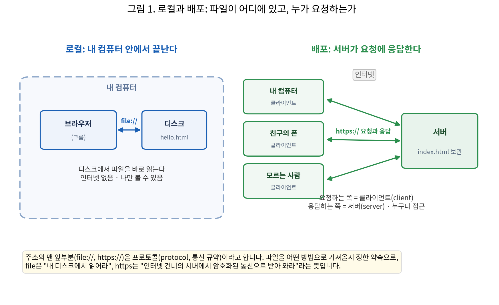

[3주차] TDD와 첫 배포
SDD에서는 완성된 소프트웨어에서 명세를 거꾸로 뽑아내고, 그 명세만으로 다시 만들어 보았습니다. 여기는 그 뒷부분입니다. “AI가 만들고, 사람이 검증한다”의 검증입니다.
첫 주에 우리는 세 가지를 생각해 봤습니다. ① 내가 말하지 않았는데 AI가 스스로 정한 것은 무엇인가, ② 이 코드가 맞는지 확인할 방법이 있는가, ③ 요구를 하나 더 붙이려면 어디를 고쳐야 하는가. ①과 ③의 답이 SDD의 명세였고, ②의 답이 TDD입니다.
회사에서 듣게 될 질문이 둘 있습니다. “그래서, 개선됐나요?” AI에게 다시 만들라고 시켰다면 “다시 했다” “고쳤다”가 정확히 한 일입니다. “더 나아졌다” “개선되었다”라고는 아직 할 수 없습니다. 고치기 전에 판정 기준을 테스트 파일로 적어 두고, 고친 뒤 같은 파일을 다시 실행해 pytest가 0개 → 5개 통과로 바뀐 것을 봤을 때 비로소 “개선했다”고 말할 수 있습니다. 그리고 “클로드가 했습니다”라는 보고. “어떻게 했나”라고 물으면 AI 채팅창에 입력해 시킨 말과 AI가 대답해준 답변을 그대로 옮기는 경우가 많습니다. 사람의 검증이 빠진, 사람이 책임지지 않는 보고입니다. 했다는 말과 실제로 한 것을 가르는 근거가 테스트이고, 사람이 쓴 테스트가 통과했는지로 답합니다.
목표는 하나입니다. “그게 맞는지 무엇으로 확인했나”라는 질문에 “사람이 쓴 이 테스트가 통과했다”라고 답할 수 있게 되는 것.
세 부분으로 진행합니다.
- 로컬과 배포. 같은 파일을 컴퓨터와 폰에서 열어 결과를 비교합니다. 내 화면에서 동작한 것은 내 컴퓨터의 파일 · 경로 · 설치된 도구에 기대고 있습니다. 그 조건이 없는 기기에서는 같은 결과가 나오지 않습니다. 그래서 검증은 내 화면이 아니라 테스트와 공개 주소로 합니다. 2 · 3의 이유입니다(실습 1).
- TDD. 테스트 없이 고치면 오류 없이 조용히 깨집니다. 화면만 보고는 어느 요구가 깨졌는지 알 수 없습니다. 내 포트폴리오에 아직 없는 요구 한 문장을 테스트 세 줄(정상 2 · 경계 1)로 옮기고, 실패(Red)에서 통과(Green)까지 한 번 진행합니다. 통과 뒤 테스트 파일이 그대로인지 확인합니다. AI가 기준을 고쳐 통과시킬 수 있기 때문입니다(교수 화면 비교 · 실습 2).
- 첫 배포. 검증을 마친 결과물을 Cloudflare Workers에 배포해 공개 주소를 받습니다. 공개 주소는 내가 모르는 사람도 들어옵니다. 동시접속 · 보안 · 개인정보 문제가 이때 생기고, 로컬에서 버그였던 것이 사고가 됩니다. 그래서 순서가 검증 먼저, 배포 나중입니다. 폰에서 같은 기능을 확인하고 주소를 포트폴리오에 반영합니다(실습 3 · 정리).
시작은 매주 같습니다. 환경 접속과 자료 받기(0장)입니다.
학습 목표
수업이 끝나면 이 세 질문에 답할 수 있습니다. 질문마다 실습 하나가 답을 만듭니다.
- 어떤 환경에서 되는가. 내 화면의 동작은 내 컴퓨터의 파일 · 경로에 의존합니다.
- 실습 1:
file://주소를 폰으로 보내 확인합니다.
- 실습 1:
- 무엇 때문에 실패했는가. 테스트 3개가 어느 요구에서 실패했는지 가리킵니다.
- 실습 2: 테스트 3개의 Red → Green 기록을 봅니다.
- 어디까지 자동으로 확인되는가. 테스트가 지키는 범위와 사람이 직접 볼 범위는 다릅니다.
- 실습 3: 공개 주소의 기능과 테스트 범위를 비교합니다.
0. 시작하기: 환경 접속, 자료 받기, SDD 되짚기
수업은 수업마다 같은 순서로 시작합니다. 서버에 접속하고, 터미널 2개를 배치하고, Claude Code가 동작하는지 점검하고, week03 자료를 받습니다. 처음이거나 절차를 잊었어도 이 장만 따라오면 실습을 시작할 수 있습니다.
0-1. 실습 환경 접속
지난 주차에 갖춘 환경을 그대로 다시 엽니다. 처음이거나 절차를 잊었다면 「첫 접속」부터.
- 서버 접속 · Remote-SSH 권장. VS Code에서
F1→Remote-SSH: Connect to Host→아이디@서버주소. 확장이 없거나 처음이면 아래의 「첫 접속」과 「Remote-SSH」를 먼저 합니다. - 터미널 2개 배치. 터미널 1 = Claude Code(지시), 터미널 2 = 서버 명령(실행 · 검증). Remote-SSH 창이면 New Terminal → 분할 아이콘으로 만듭니다. 두 터미널의 현재 폴더는 각각 따로 바뀝니다. 한쪽에서
cd를 해도 다른 쪽은 움직이지 않습니다. - 환경을 점검합니다. claude 버전 → API 키 → 모델 순서로 칩니다.
[서버 터미널]
claude --version
test -n "$ANTHROPIC_API_KEY" && echo KEY_SET 2.x.x (버전 숫자는 달라도 됩니다)
KEY_SET[Claude Code 안]
> /status
Model: haiku주의. 지금 이 창이 내 PC인지 서버인지는 프롬프트가 알려줍니다. PS C:\Users\이름> = 내 PC, 대괄호에 @실습서버가 보이면 서버(날짜 · 시각 · 폴더가 함께 나올 수 있습니다).
비밀번호를 잊었으면 손을 들어 알립니다. Remote-SSH가 안 되면 PowerShell 창 2개로 진행합니다. Model이 haiku가 아니면 /model에서 다시 선택합니다.
첫 접속 (처음이거나 절차를 잊었다면)
아이디는 이름 영문 약자+성입니다(예: 홍길동 → gdhong). PowerShell을 엽니다(시작 검색 “Windows PowerShell” 또는 Win+X → 터미널). continue connecting? 질문은 첫 접속에만 나오고 yes를 칩니다. 비밀번호는 쳐도 화면에 안 보이는 것이 정상이고, 끊기면 다시 ssh부터입니다. 초기 비밀번호는 전원 공통이니 반드시 바꿉니다.
[내 PC · PowerShell]
ssh 아이디@서버주소 ... continue connecting? (yes/no)? yes # 첫 접속에만
아이디@서버주소's password: # 입력해도 안 보임
[아이디@실습서버 ~]$ # 접속 성공![서버 터미널]
passwd # 현재 비밀번호 → 새 비밀번호 2번 → updated successfully- [확인 1] 프롬프트에
@실습서버가 보이고, 초기 비밀번호였다면passwd로 변경까지 마쳤다.
VS Code Remote-SSH 설치와 연결
- VS Code 설치 (최초 1회). code.visualstudio.com에서 받아 기본값으로 설치합니다.
- Remote - SSH 확장 설치 (최초 1회). 왼쪽 확장(Extensions) 아이콘 → “Remote - SSH” 검색 → Install. 네모 블록 네 개 모양 아이콘입니다.
F1→Remote-SSH: Connect to Host.아이디@서버주소입력(ssh는 붙이지 않습니다) → 처음이면 Linux 선택 → 비밀번호.- File > Open Folder →
/home/아이디. 탐색기에 서버 파일이 보이고,Ctrl+S저장이 곧 서버에 쓰기입니다. - 터미널 2개 (New Terminal → 분할). 터미널 1 = claude용, 터미널 2 = 명령용.
ssh를 다시 치지 않습니다.
[VS Code] 확장 설치 → 연결 → 터미널
확장(Extensions) → 검색 Remote - SSH # 최초 1회
F1 → Remote-SSH: Connect to Host...
아이디@서버주소 # ssh 는 붙이지 않습니다
Select platform: Linux # 처음 한 번만
왼쪽 아래 SSH: 서버주소 # 연결 완료
File > Open Folder → /home/아이디
Terminal > New Terminal → 분할 아이콘
터미널 1 claude용 · 터미널 2 명령용붙여넣기는 VS Code 터미널 Ctrl+V, PowerShell 창은 마우스 오른쪽 클릭입니다. 연결이 안 되면 PowerShell 창 2개로 각각 ssh 아이디@서버주소 접속하면 터미널 1 · 2를 대신합니다. 파일은 cat 파일이름으로 확인합니다.
- [확인 2] 왼쪽 아래에
SSH: 서버주소가 보이고, 탐색기에/home/아이디의 파일이 보이며, 터미널 2개가 모두 서버에서 열려 있다.
설치와 모델 설정 (아직 안 했거나 잊었다면)
이미 한 사람은 건너뜁니다. 자세한 절차는 배포 폴더 /home/공용계정/week01에 들어 있는 1주차 접속 가이드에 있습니다.
- 설치 (최초 1회). 서버 터미널에서 아래 설치 명령 실행 → 터미널을 닫았다 새로 열기 →
claude --version확인. - API 키 확인 · 등록 (최초 1회). 키는 내 홈에
.txt파일로 배포되어 있습니다.cat ~/*.txt로 열어 복사하고, 등록 명령의 ‘발급키’ 자리에 붙여 넣습니다. - 첫 실행 승인.
claude입력 → Yes → Security notes에서 Enter → 폴더 신뢰 Yes. - 모델을 Haiku로. 기본 모델은 계정 · 버전에 따라 다르며 Opus일 수 있습니다. 그대로 Enter 치지 말고
/model에서 Haiku 선택 →/status확인.
[서버 터미널] · 설치와 키 등록
curl -fsSL https://claude.ai/install.sh | bash
claude --version
cat ~/*.txt
echo 'export ANTHROPIC_API_KEY=발급키' >> ~/.bashrc
source ~/.bashrc sk-ant-********************** ← 복사
# source 는 등록한 키를 바로 적용합니다[Claude Code 안] · 모델 설정
> /model → 목록에서 Haiku 선택 (Opus 금지)
> /status
Model: haiku주의. 설치 · 키 등록 · 모델 설정은 모두 서버 터미널에서 합니다. 내 PC 창에서 치면 설치되지 않습니다. 로그인 방법 선택 화면이 나오면 키 등록이 빠진 것입니다. Go back으로 나가 2번부터 다시 합니다. 설치 · 키 등록 · 모델 설정은 모두 최초 1회이고 재접속해도 유지됩니다. 키 원문은 화면 공유나 채팅에 노출하지 않습니다.
0-2. 자료 받기: week03 폴더를 내 폴더로 복사
서버에는 성격이 다른 폴더가 둘 있습니다. 내 폴더 /home/아이디(읽기 + 쓰기, 이 과목 작업 공간이자 제출함. 산출물은 week01 · week02 · week03처럼 주차별 폴더로 정리하고 week03입니다. 다른 학생은 내 폴더를 볼 수 없습니다)와 공용 배포 폴더 /home/공용계정(읽기 전용, 수업 자료가 week01 · week02 … 처럼 주차 폴더로 배포됩니다). 해당 폴더를 내 폴더로 복사해 온 뒤, 내 폴더에서 작업합니다. 파일 수정 작업은 반드시 배포 폴더 파일 복사 → 「내 폴더」에서 합니다.
[서버 터미널]
ls ~
cd ~
cp -rn /home/공용계정/week03 ~/
ls week03
cp -n week03/내소재_양식.md week03/내소재.md README.md 내키이름.txt
예제 도구 강의안_03주차.md 슬라이드_03주차.pdf
골격 시연 내소재_양식.md 내프롬프트_양식.md requirements.txtls는 “지금 폴더”, ls ~는 “내 홈”입니다. 내 홈의 내키이름.txt는 등록한 API 키 파일입니다. VS Code가 서버에 연결되어 있어 저장(Ctrl+S)이 곧 서버에 쓰는 것입니다.
cp -rn은 폴더를 통째로 복사하되 이미 있는 파일은 덮어쓰지 않는다는 뜻입니다. 재접속해서 다시 쳐도 기존 작업이 지워지지 않습니다. 골격 · 시연 · 예제 · 도구가 쓰는 폴더입니다. 골격/은 실습 2의 판정 테스트 5개와 미구현 judge.py, 시연/은 교수 화면과 맞춰 볼 사고 재료, 예제/는 SDD 포트폴리오가 없는 사람의 대체 재료, 도구/는 복사 · 동결 · 압축 스크립트입니다. 내소재_양식.md가 실습 답안지이고, 사본 내소재.md를 열어 둡니다. 답은 여기에 씁니다.
슬라이드 PDF와 강의안을 내 PC에서도 보려면 새 PowerShell 창을 하나 더 엽니다(내 로컬 PC). 서버 접속 창은 그대로 둡니다. 앞 장의 cp는 서버 안 복사, scp는 내 PC로 전송이고, 앞에서 내 폴더로 복사해 둔 week03에서 가져옵니다. 명령 끝의 마침표(.)는 “지금 이 폴더로”라는 뜻이며, 프롬프트(PS C:\Users\이름>) 뒤의 명령만 입력합니다. 서버 창([아이디@실습서버 ~]$)에서 치면 내 PC가 아니라 서버 안에 내려받아집니다.
[내 PC · PowerShell] 새 창 · 서버 접속 창은 그대로
scp 아이디@서버주소:~/week03/*.pdf .
scp 아이디@서버주소:~/week03/강의안_03주차.md .
start 슬라이드_03주차.pdf 아이디@서버주소's password:
슬라이드_03주차.pdf 100%
강의안_03주차.md 100%start 명령을 치면 PDF가 바로 열립니다. 자기 화면에 띄워 놓고 따라옵니다. 강의안 .md는 VS Code에서 열고 Ctrl+Shift+V(미리보기) 또는 Ctrl+K V(나란히 보기)를 누릅니다. 별도 설치 없이 되는 내장 기능이며, 터미널이 아니라 편집기에서 누르는 단축키입니다.
- [확인 3] 내 PC에 슬라이드 PDF와 강의안
.md가 받아졌고, PDF가 화면에 열렸다.
0-3. SDD 되짚기
SDD에서는 세 부분을 했습니다.
- 명세를 뽑는 여섯 단계. 프로덕트에서 명세를 추출해 개발했습니다. 프로덕트 준비 → AI로 구조 읽기 →
spec/저장 → 요구사항 검토 →rebuild/재생성 → 발전. 손으로 한 일은 EARS 라벨, 질의 4개 답하기, AI가 정한 곳에← 수정, 명세 끝에← 내가 원하는 사항 추가입니다. 예제 넷은 근거만 달랐습니다(A 수영 강좌 · B 채용 공고 URL, C 지도 앱 관찰은 교수 데모, D 포트폴리오 코드). 배치는 Pencil.pen으로 했습니다. - SDD의 세 원리. ① 무엇과 어떻게를 분리한다 · 명세는 무엇, 코드는 어떻게이고, 명세를 고정하고 코드는 다시 생성합니다. ② 명세 품질 = 제품 품질 상한 · 있는 것은 정확하지만 없는 것은 추측해 채우므로, 명세의 빈틈은 곧 제품 결함이 됩니다. ③ 변경은 명세에서 시작한다 · 코드가 아니라 명세를 고치고 다시 생성하며, 흐름은 요구 → 명세 → 계획 → 작업 → 구현 → 검증입니다.
- 바이브코딩과의 차이. 바이브코딩은 “만들어줘” 한 줄에서 바로 구현하고 세부사항은 AI가 임의로 추측해 정하므로 시킬 때마다 결과가 달라집니다. SDD는 명세가 단일 기준이라 정확한 명세만 있으면 똑같이 다시 만들 수 있고, 명세와 달라진 곳이 빈틈으로 드러납니다. 회사에서 쓰는 이유는 기준이 코드가 아니라 “원래의 의도”이기 때문입니다. 기획 · 디자인 · 개발 · 테스트 · AI가 같은 문장을 읽고, 문서 없는 인수인계 코드도 명세부터 만듭니다.
SDD 체크리스트. 「SDD 세 부분」이 폴더에 이렇게 남아 있습니다. 하나씩 열어 확인합니다.
✓ 예제마다 spec/에 명세서가 있다
AI가 뽑은 요구사항명세서, REQ마다 EARS 라벨
✓ 명세서를 읽고 한 곳을 고쳤다
질의 4개에 답하고, AI가 정한 곳에 ← 고침
✓ rebuild/에 명세만으로 다시 만든 것이 있다
원본과 달라진 부분이 명세의 빈틈
✓ 명세 끝에 내 요구 한 줄(← 추가)을 넣었다
고친 것은 명세 한 줄뿐, 프로그램은 AI가 다시 생성
✓ 포트폴리오 rebuild/index.html에 내 내용이 있다
이름 · 지원 직무 · 프로젝트 · 연락처, 내화면.pen 적용
✓ 내소재.md에 「가장 가까운 예제」를 골라 두었다
A 수영 강좌(운동) · B 채용 · D 포트폴리오 중 하나[서버 터미널]
ls ~/week02
ls ~/week02/운동/spec week02/
운동/ 채용/ 포트폴리오/
spec/요구사항명세서.md
spec/프롬프트.md
rebuild/요구사항명세서.md
rebuild/ 다시 만든 것
내소재.md
# spec/ 뽑아낸 명세 · rebuild/ 명세만으로 다시 만든 것
# 내소재.md 내 답과 생각 거리없으면 배포 폴더 week02를 다시 복사합니다. 빠진 것이 있어도 지장 없습니다. week03/예제 키트를 활용해 같은 절차를 밟습니다.
쓰는 것은 이 중 다섯째 줄 하나입니다. 실습 2의 재료는 포트폴리오 하나로 고정되어 있습니다(5-6). SDD에서 rebuild/index.html을 만들었으면 그것을, 없으면 week03/예제/포트폴리오를 씁니다. 트랙 A · B · C · D를 고르는 자리는 여기에 없습니다.
1. 왜 검증인가
SDD 명세를 뽑아 다시 만들었습니다. 여기는 “AI가 만들고, 사람이 검증한다”의 뒷부분, 검증입니다. 첫 주에 생각해 본 세 질문 중 ②「맞는지 확인할 방법」의 답이 TDD입니다.
진행 순서은 이렇습니다. 로컬 ↔︎ 배포(폰 실험) → 내 포트폴리오에서 새 요구 한 문장 → TDD(Red · Green, 한 번) → 첫 배포.
1-1. 회사에서 벌어지는 일, 그리고 제대로 하는 방법
왼쪽은 실제로 자주 보는 장면입니다. 오른쪽 세 가지가 일을 제대로 하게 해 줍니다.
| 회사에서 벌어지는 일 | 무엇이 빠졌나 | 돌아오는 질문 |
|---|---|---|
| “밤새 처리했습니다” | AI가 했다고 한 자동화가 실제로는 돌지 않았고, 실행 기록도 없습니다 | “로그와 실행 결과는 어디 있나요?” |
| “개선했습니다” | 고치기 전 점수를 측정하지 않아서, 비교할 기준이 없습니다 | “고치기 전에는 몇 개가 통과했나요?” |
| “클로드가 했다고 대답했습니다” | 리뷰 자리에서 사람의 판단이 빠집니다 | “본인은 무엇을 확인했나요?” |
제대로 하는 방법 · 보고에 들어갈 세 가지.
- 판정 기준
- 공통 테스트 5개 · 골격 폴더에 배포해 전원 동일한 내용입니다.
- 직접 작성한 테스트 3개 · 명세에 아직 없는 요구 한 개를 정상 2 · 경계 1로 옮긴 것입니다(학생마다 상황에 맞게 작성합니다). 정상 2는 제대로 된 입력에 기대한 결과가 나오는지, 경계 1은 비었을 때 · 잘못된 값일 때 안내나 오류가 나오는지 봅니다.
- 사람의 작업 내용 · 테스트를 먼저 쓰고 동결한 뒤, 테스트는 그대로 두고 구현만 고쳤다.
- 먼저 쓰는 이유: 기준을 나중에 만들면 이미 나온 결과에 맞춰 기준이 바뀔 수 있습니다.
- 동결하는 이유: 테스트를 통과시키려고 기준을 고치지 못하게 방지합니다.
- 확인한 내용 · 같은 테스트 재실행 · 처음에는 5개 모두 실패(Red) → 구현 뒤 5개 모두 통과(Green), 테스트 파일은 그대로.
1 · 2 · 3 중 하나라도 빠지면 제대로 된 개선 보고가 아닙니다. 실습 2 준비 1(5-6 ~ 5-10)에서 요구와 세 줄을 쓰고, 5-13 ~ 5-18에서 Red → Green을 돌려 이 자리를 채웁니다. 수업이 끝날 때 쓸 문장은 이런 모양입니다.
“판정 테스트 5개를 기준으로, 테스트를 동결한 뒤 구현만 고쳤고, 같은 테스트를 다시 돌려 5개 모두 실패에서 5개 모두 통과로 바뀐 것과
TEST_UNCHANGED를 확인했습니다.”
왜 정상이 둘인가. 정상이 한 개뿐이면 무엇을 넣어도 같은 값을 돌려주는 구현도 통과하므로, 다른 입력값 두 개로 기대한 결과가 나오는지 확인합니다. 테스트 3개는 이번 실습의 최소 분량이고, 요구가 늘면 테스트도 그만큼 추가합니다.
1-2. 회사가 요구하는 역량: 아정당 AI Builder
예전에는 요구와 설계는 다른 사람이 정하고, 개발자는 자기가 맡은 구현과 버그 수정만 했습니다. 비즈니스 이해는 없어도 됐습니다. 지금은 기획, 명세부터 검증까지 한 사람이 맡습니다. 무엇을 만들지 판단해야 하므로 회사 사업에 대한 이해가 실력입니다.
| 공고가 요구하는 것 | 수업에서 연습하는 것 |
|---|---|
| E2E로 끝까지 · 기획 · 화면 설계 · 구현 · 배포와 이후 운영까지 직접 맡습니다 | 명세서 · 요구사항명세서.md · EARS 라벨 |
| AI 도구로 실제 배포까지 · Claude Code로 만든 것을 공개 주소까지 올려 운영한 경험을 봅니다 | 검증 · 판정 테스트와 TDD 통과 기록 |
| AI 결과물을 다룰 기본 구조 · DB · API · 인증 · 배포를 이해하고 결과를 검증합니다 | 배포 · 공개 주소, 폰에서 같은 기능 확인 |
| 사업 지표로 결과 확인 · A/B 테스트를 설계 · 해석하고 전환율 · 매출로 확인합니다 | 보고 문장 · 무엇을 기준으로 · 내가 한 일 · 무엇으로 확인했다 |
E2E 다섯 단계와 이 수업의 범위.
| 단계 | 무엇인가 | |
|---|---|---|
| 명세 | 기획을 확인 가능한 문장으로. E2E는 사업 · 시장 이해와 기획에서 시작하고, 명세는 기획을 문장으로 확정하는 단계입니다 | SDD에서 했습니다 |
| 검증 | 맞는지 확인하기 | TDD로 판정 기준을 정하고 통과를 직접 확인합니다 |
| 배포 | 공개 주소 받기 | 실습에서 공개 주소를 받아 폰에서 확인합니다 |
| 운영 | 유지보수는 오류를 고쳐 계속 동작하게 하는 일, 발전보수는 요구가 늘 때 기능을 더하는 일입니다 | 회사에서는 당연한 업무지만 수업 여건상 다루지 않습니다 |
| 보고 | 무엇으로 확인했는지 말하기 | 기준 · 내가 한 일 · 확인 방법을 숫자로 말합니다 |
참고: 원티드 아정당 AI Builder 채용 공고 · https://www.wanted.co.kr/wd/385009 (2026년 9월 확인)
1-3. 개발자의 역할이 구현에서 요구 정의로 확대된다
예전에는 구현과 버그 수정이 주 업무였고, 요구와 품질 기준은 다른 역할이 정했습니다. 지금은 AI가 구현을 맡는 만큼, 무엇을 어떤 조건으로 만들지 정하는 일이 개발자의 업무가 됩니다.
역할이 확대되는 영역 셋.
비기능 요구: 어떤 조건에서 되는가. 기능 요구는 무엇이 되는가, 비기능 요구는 어떤 조건에서 되는가를 정합니다. 예: 3,000명이 한꺼번에 들어와도 멈추지 않아야 한다 · 1,000명이 동시에 입력해도 3초 안에 응답해야 한다 · 비밀번호는 암호로 저장해야 한다. 개발 조건이 아니라 사업 조건으로, 회사의 매출과 신뢰와 직결됩니다.
사업 맥락: 왜 만드는지까지 판단. 경영정보시스템(MIS)은 회사 일과 데이터의 운영 방법을 다루는 분야입니다. 누가 쓰고 무엇이 이득인지를 개발자가 함께 판단합니다.
요구공학: 모호한 요구를 확인 가능한 문장으로 확정. 요구공학은 이해관계자의 요구를 체계적으로 도출, 분석, 명세, 검증하고 전 생명주기 동안 관리하는 공학적 활동입니다. SDD EARS 문형이 그 방법입니다.
시청 추천. IBM Technology, “The role of the engineer is shifting up the stack” · https://www.youtube.com/watch?v=3JDqfWGKoiY
1-4. 품질은 사람이 정한 수단으로 검증한다
예전에는 만든 사람이 자기 화면에서 한 번 눌러 보는 것이 확인의 전부였습니다. 지금은 “무엇으로 확인했나”에 수단을 들어 답합니다. 아래 세 가지가 그 목록이고, 그중 첫 번째를 합니다.
| 수단 | 무엇을 확인하나 | |
|---|---|---|
| 단위 테스트 | 함수 하나가 맞는지 | 실습 2에서 쓰는 테스트 3개가 단위 테스트입니다 |
| 통합 · 계약 테스트 | 통합은 붙였을 때 맞는지, 계약은 형식이 약속대로인지 | 수업에서 다루지 않음 |
| 보안 검증 · 성능 시험 | 키가 새지 않는지, 사람이 몰려도 버티는지 | 수업에서 다루지 않음 |
| 런타임 모니터링 · 관측성 | 모니터링은 오류 수 · 응답 시간 · 접속 수를 계속 재는 일. 관측성은 남은 기록만으로 원인을 찾을 수 있는 상태(예: 오류가 늘어난 시각의 요청 기록) | 이름과 뜻만 |
시청 추천. IBM Technology 영상의 테스트 · 모니터링 체크리스트 부분 · https://www.youtube.com/watch?v=3JDqfWGKoiY
1-5. 용어 정리: 검증 수단 일곱 가지
무엇을 확인하는지로 구분합니다. 실습에서 직접 하는 것은 단위 테스트 하나이고, 나머지는 회사에서 쓰는 이름과 뜻만 익혀 둡니다.
코드가 맞는지 확인하는 테스트
- 단위 테스트 · 함수 하나가 맞는지 확인합니다. 예: 3만 원을 넣으면 배송비 3,000원이 나오는지 확인합니다. 실습 2에서 쓰는 테스트 3개가 이것입니다.
- 통합 테스트 · 여러 부분을 붙였을 때 맞는지 확인합니다. 예: 화면에서 누른 값이 파일에 저장되는지 확인합니다.
- 계약 테스트 · 주고받는 형식이 약속대로인지 확인합니다. 예: 금액을 숫자로 주기로 했는데 글자로 오면 실패로 잡습니다.
비기능 품질을 검증하는 수단
보안 검증 · 공개해서는 안 되는 것이 새지 않는지 확인합니다. 예: API 키가 코드나 응답에 섞여 있는지 확인합니다.
성능 시험 · 사람이 몰릴 때 버티는지 확인합니다.
- 부하 시험(load test): 예상 사용량에서 기준을 지키는지(예: 동시 1,000명에서 3초 이내 응답).
- 스트레스 시험(stress test): 예상을 넘겨 한계까지 올려 어디서 무너지는지(예: 3,000명에서 멈추는지).
- 내구성 시험(soak test): 오래 돌릴 때 느려지거나 메모리가 새는지.
런타임 모니터링 · 동작하는 동안 상태를 계속 측정합니다. 예: 오류 수 · 응답 시간 · 접속 수를 그래프로 보고 늘어난 시각을 찾습니다.
관측성 · 남은 기록만으로 원인을 찾을 수 있는 상태입니다. 예: 오류가 늘어난 시각의 요청 기록에서 어느 요청이 실패했는지 찾습니다.
시청 추천. IBM Technology 영상의 테스트 · 모니터링 체크리스트 부분 · https://www.youtube.com/watch?v=3JDqfWGKoiY
1-6. 이 과목의 방향: AI 활용법 진화 로드맵
도구는 빠르게 바뀌지만 네 단계의 구분은 대개 그대로 쓰입니다. 지시에서 그치지 않고 검증까지 시키는 것이 이 과목의 목표입니다. TDD는 네 단계에 걸쳐 쓰입니다: 지시의 완료 조건, AI가 읽는 기준, 통과를 강제하는 장치, 반복을 끝내는 신호.
| 단계 | 무엇인가 | TDD가 쓰이는 자리 |
|---|---|---|
| 1단계 · 프롬프트 엔지니어링 | 무엇을 할지 매번 정확하게 지시합니다. 모든 활용의 출발점 | 지시에 완료 조건을 넣습니다: “판정 테스트 5개를 모두 통과해야 완료이다” |
| 2단계 · 컨텍스트 엔지니어링 (1을 포함해 확장) | 올바른 판단을 하도록 전체 정보를 갖춰 줍니다. 대표 도구는 CLAUDE.md | 테스트 파일과 명세서를 폴더에 둬서 AI가 언제나 판정 기준을 읽게 합니다 |
| 3단계 · 하네스 엔지니어링 (1·2를 포함해 확장) | 강제 검증 장치를 붙여 결과를 믿게 만드는 틀. MCP · Skill · Hook | 테스트 파일을 test_guard로 고정해 AI가 판정 기준을 바꾸지 못하게 합니다. 테스트가 통과해야 다음 작업으로 넘어갑니다 |
| 4단계 · 루프 엔지니어링 (1·2·3을 포함해 확장) | 계획 · 실행 · 검증을 스스로 도는 단계. 에이전트 · 자동화 | 실패한 테스트를 고치고 다시 실행하기를 반복합니다. 실패(Red) → 통과(Green) 한 바퀴를 직접 돌립니다 |
세 이름의 뜻. MCP는 AI를 외부 프로그램에 연결하는 표준 규격입니다(예: 노션 · 구글 드라이브 · 슬랙 · 깃허브를 AI가 직접 읽고 씁니다). Skill은 반복하는 작업 절차를 파일로 저장해 두고 불러 쓰는 묶음입니다(예: 회사 보고서 양식대로 쓰기 · 슬라이드 만들기 절차). Hook은 정해진 시점에 명령이 자동 실행되는 장치입니다(예: 깃에서 커밋 전 자동 검사 · 파일을 고친 뒤 pytest 실행).
한 문장으로 줄이면 AI가 만들고, 사람이 검증한다입니다. 각 단계에서 무엇이 갈리는지는 참고 9-4에서 한 일로 되짚습니다. ## 2. 로컬과 배포
2-0. “제 머신에선 되는데요”
개발자들 사이에 오래된 농담이 있습니다. 머그컵과 티셔츠로도 팔립니다.
- 이 말의 뜻. 내 컴퓨터의 파일 · 경로 · 설치된 도구에 의존해 동작했다는 뜻입니다. 다른 기기에는 그 환경이 없어 같은 결과가 나오지 않습니다.
- 보고로는 쓸 수 없다. 확인한 사람이 한 명이고, 어떤 조건에서 동작했는지 남지 않습니다. 상대는 확인할 방법이 없어 개발자 개인의 주장으로 끝납니다.
- 원인을 말하면 좋은 습관이다. “제 머신에선 됩니다”로 끝나면 변명이고, “제 환경에서는 이 조건이 있어 됩니다”까지 말하면 환경 차이를 찾는 단서가 됩니다.
- 그래서 이렇게 합니다. 공개 주소로 누구의 기기에서도 같은 결과를 확인하고, 사람이 쓴 테스트 3개로 통과를 확인합니다. 보고 문장이 “제 머신에선 됩니다”에서 “테스트 5개가 통과하고 이 주소에서 동작합니다”로 바뀝니다.
출처(머그 · 티셔츠): https://www.amazon.com/dp/B07C9FVM4R · https://developer-shop.com/products/it-works-on-my-machine-mug
2-1. 로컬: 내 컴퓨터에서 열어 보기
로컬(local)은 내 컴퓨터입니다. 파일이 내 디스크에 있고 내 컴퓨터가 읽어 실행합니다.
- 우측 상단의 2줄을
hello.html로 저장. 메모장이면 파일 형식은 “모든 파일”, 인코딩은 UTF-8로 바꿉니다. 그러지 않으면hello.html.txt로 저장되거나 한글이 깨집니다. - 크롬
Ctrl+O로 엽니다. 파일을 크롬 창으로 끌어다 놓아도 됩니다. - 주소 맨 앞을 봅니다:
file://. 맨 앞은 프로토콜, 즉 주고받는 순서와 형식을 정한 통신 약속입니다.file은 내 디스크에서 직접 읽으라는 뜻이라 네트워크를 쓰지 않습니다. - 새 탭에서 naver.com과 비교.
https는 서버에 요청해 받아 오라는 뜻입니다.
주소를 여는 데 필요한 네 가지 이름.
- IP 주소(Internet Protocol address): 인터넷에서 컴퓨터를 찾는 번호입니다.
- DNS(Domain Name System): 도메인 이름을 IP 주소로 바꿔 줍니다(naver.com → IP 주소).
- TLS(Transport Layer Security): 주고받는 내용을 암호화해 중간에서 읽지 못하게 합니다.
- http와 https: 웹 문서를 주고받는 같은 규약이고, 차이는 TLS 암호화 여부입니다(포트 80과 443).
html 파일 만들기
<meta charset="utf-8">
<h1>이 파일은 내 컴퓨터에만 있습니다</h1>주소창 비교
[크롬 주소창 1]
file:///C:/Users/이름/Desktop/hello.html
[크롬 주소창 2]
https://www.naver.com주의. 이 장은 서버가 아니라 내 PC에서 합니다. 뒤의 실습 1은 다시 서버에서 합니다.
- [확인 4]
file://은 내 디스크에서 직접 읽고,https://는 서버에 요청해 받아 오며 그 통신이 암호화된다는 차이를 말할 수 있다.
2-2. 클라이언트, 서버, 그리고 배포
- 클라이언트: 요청하는 쪽. 내 브라우저나 친구의 폰이 클라이언트입니다. 주소를 넣으면 요청을 보냅니다.
- 서버: 보관하고 응답하는 쪽. 요청이 오면 파일을 돌려줍니다. 언제 올지 모르므로 항상 응답할 수 있는 상태여야 합니다. 직접 운영하면 계속 켜 두어야 하고, 실습 3에서 쓰는 Workers는 그 상태를 제공자가 유지합니다. 서버 관리자는 그 상태를 지킵니다. 야간 · 휴일 대기와 장애 대응이 따릅니다.
- 배포(deployment): 서버에 올리는 일. 내 파일을 서버에 올려 누구든 요청할 수 있게 만드는 일이고, 그 결과가 공개 주소입니다.
로컬과의 차이. 사용자와 파일 위치가 다릅니다. 로컬은 나 하나 · 내 디스크, 배포는 여러 명 · 서버입니다. 고치는 방법도 다릅니다. 로컬은 저장하고 새로고침, 배포본은 다시 올려야 바뀝니다.
배포할 때 주의할 것. 올리는 파일을 고릅니다. 테스트 · 답안 · 키 파일은 공개 목록에서 뺍니다. 공개 뒤에는 동시접속 · 보안 · 개인정보 문제가 생기므로 검증을 먼저 합니다.

기억할 것: 파일이 어디에 있고 누가 요청하는가. 이 그림의 왼쪽이 지금 hello.html의 상태입니다.
2-3. 만드는 동안은 로컬, 완성본만 배포
게임 회사도 만드는 동안에는 각자의 로컬에서 실행합니다. 실무의 기본 동선입니다.
| 로컬에서 만드는 이유 | 배포된 뒤에는 반대 |
|---|---|
| 수정과 확인이 빠르다 · 저장하고 새로고침하면 결과가 바로 보입니다 | 고치려면 다시 올려야 한다 · 로컬처럼 저장하고 새로고침하는 것으로 끝나지 않습니다 |
| 미완성을 노출하지 않는다 · 오류투성이 상태를 고객에게 보이지 않습니다 | 오류가 즉시 모든 사용자에게 보인다 · 로컬에서는 나만 보던 문제가 사용자 피해가 됩니다 |
| 비용이 들지 않는다 · 서버 비용 없이 시험해 볼 수 있습니다 | 서버가 도는 내내 비용이 든다 · 접속이 없어도 켜 두는 시간만큼 비용이 발생합니다 |
비개발자와 일할 때. 개발자에게는 당연한 구분이지만, 기획 · 마케팅 · 고객에게는 “제 화면에서는 됩니다”와 “공개 주소에서 됩니다”가 같은 말로 들립니다. AI 도구로 비개발자도 화면을 만드는 지금은, 이 차이를 설명할 수 있어야 요구와 일정을 정확하게 맞출 수 있습니다.
2-4. 참고: 실제 배포는 내 PC가 아니라 저장소에서
실무의 표준 흐름입니다. 이번 수업은 4단계에서 중간의 저장소 과정을 생략하고 1과 4만 실습합니다.
- 로컬에서 작성하고 테스트. 내 PC에서 고치고 테스트를 실행합니다. 실습 2가 이 단계입니다.
- 저장소에 올린다(커밋 · 푸시). 여기서 코드가 단일 기준이 됩니다. 올리지 않은 수정은 나만 가진 상태입니다.
- 저장소에서 자동 검증(CI). 올라온 코드로 서버가 테스트를 다시 실행합니다. 내 PC에서만 통과한 것은 근거가 약합니다.
- 통과한 버전을 배포(CD). 배포는 저장소의 바로 그 버전에서 나갑니다. 실습 3은 이 단계를 손으로 합니다.
저장소가 기준.
- 단일 기준(single source of truth) · 기준은 내 로컬이 아니라 저장소입니다. SDD에서 명세가 단일 기준이었던 것과 같습니다.
- 여러 사람의 로컬을 맞춘다 · 각자의 로컬은 버전이 갈립니다. git이 변경 이력을 기록해 같은 상태를 맞춥니다.
- 어느 버전이 공개 중인지 안다 · 문제가 생기면 그 버전으로 되돌립니다. 저장소에 올리지 않으면 본인 화면만 최신이고, 다른 사람은 이전 버전을 보고 있게 됩니다.
실습 3에서는 저장소 없이 ZIP 파일을 올려 배포합니다. Git 같은 저장소를 쓰면 2 · 3단계가 자동으로 붙습니다.
CI · CD. CI(Continuous Integration)는 올라온 코드를 자동으로 검증하는 일, CD(Continuous Deployment)는 검증을 통과한 버전을 자동으로 배포하는 일입니다. GitHub Actions 같은 도구가 이 일을 합니다.
AI와의 분업. git 명령과 Actions 설정 파일은 Claude Code에게 시킬 수 있고, 실행은 GitHub 서버가 합니다. 사람은 올라간 내용과 통과 여부를 확인하고, 기본 브랜치(main)는 직접 푸시를 막고 검사 통과를 필수로 설정합니다.
3. 실습 1: 만들고, 내려받고, 폰으로 보내 보기
3-0. 실습 공통 · 참고: 막힐 때 대처법
세 실습에 공통으로 쓰는 장입니다. 실습 전에 훑어 두고, 막히면 이 절을 다시 폅니다. 원칙은 하나입니다. 오래 붙잡지 않고, 멈추고 대상을 좁힙니다.
| 증상 | 대처 |
|---|---|
| 명령이 엉뚱한 곳에 실행된다 | pwd로 현재 위치를 확인하고 cd로 이동합니다. 실습마다 시작 폴더가 다릅니다 |
| 작업이 길어진다 | Esc로 중단하고 범위를 좁혀 다시 요청합니다. 예: “전부 통과시켜라” → “test_judge.py의 첫 테스트만 통과시켜라” |
| 실행 명령을 모른다 | ls로 파일 이름을 보고 python3 파일이름. 모르면 Claude Code에 “실행 명령을 알려줘” |
| 세션이 끊겼다 | claude --continue로 직전 세션을 이어갑니다 |
| 모듈을 못 찾는다고 나온다 | No module named pytest는 가상환경 설치가 빠진 것, No module named judge는 실행 폴더가 다른 것입니다. pwd로 위치를 확인합니다 |
자주 쓰는 것. Esc는 Claude 작업 중단(작업 중 개입), claude --continue는 직전 세션 이어가기, Shift+Tab은 권한 모드 순환(기본 ↔︎ accept edits ↔︎ plan)입니다. 새 폴더에서 claude를 처음 띄우면 폴더를 신뢰하겠느냐고 한 번 묻습니다. Yes.
배지 읽는 법. 명령 블록 앞의 배지가 실행 위치입니다. [서버 터미널]은 명령을 직접 치는 창, [Claude Code 터미널]은 claude를 띄우는 창, [Claude Code 안]은 떠 있는 Claude에 보내는 입력, [내 PC · PowerShell]은 서버가 아닌 내 컴퓨터의 창입니다. 배지가 없는 텍스트 블록은 파일 내용이나 화면 출력의 예시입니다.
3-1. 만들기: 움직이는 것 하나
「막힐 때 대처법」의 hello.html은 내 PC에서 만들었고, 실습 1은 다시 서버에서 합니다. 서버 터미널인지 프롬프트로 확인하고 시작합니다.
- 실습 폴더를 만들고 claude 실행. 서버 터미널에서
week03/web을 만들고 그 폴더로 이동합니다.pwd로 위치를 확인합니다. Shift+Tab한 번 → Accept edits 모드. 파일 수정을 자동 승인하는 모드입니다. 생성이 여러 파일 수정으로 이어져도 멈추지 않습니다.- 만들 것을 요청합니다. 자기가 보고 싶은 것을 요청해도 됩니다. 예: “클릭할 때마다 불꽃이 터지는 애니메이션 페이지”.
- 기다리는 동안 화면을 관찰. 실무에서는 생성 시간을 고려해 여러 작업을 번갈아 진행합니다.
[서버 터미널]
mkdir -p week03/web
cd week03/web
claude # Shift+Tab 한 번 → accept edits[Claude Code 안]
> 테트리스 게임을 단일 HTML 파일 index.html로 만들어라. 키보드 화살표로 조작하고, 점수를 표시한다. [응답 예시 · 요약]
✻ 생각 중… → Write(index.html)
● 테트리스를 만들었습니다. 화살표로 조작합니다.자기가 보고 싶은 것을 요청해도 됩니다.
> 클릭할 때마다 불꽃이 터지는 애니메이션 페이지를 단일 HTML 파일 index.html로 만들어라.결과 비교. 같은 요청에도 만들어지는 것의 모양 · 색 · 규칙이 저마다 다릅니다.
- [확인 5]
week03/web에index.html이 생성되었다.
3-2. 내 컴퓨터로 가져와 열기
- 터미널 2로 옮깁니다.
claude는 터미널 1에 그대로 띄워 둡니다. 파일 확인과 명령은 터미널 2에서 합니다. - 파일을 내 컴퓨터로 내려받습니다. 서버에 연결된 VS Code 탐색기에서
week03/web/index.html우클릭 → Download… → 바탕화면에 저장. VS Code Remote-SSH를 쓰지 않는 경우, 내 PC PowerShell 창에서scp 아이디@서버주소:~/week03/web/index.html .로 받습니다. - 크롬
Ctrl+O로 엽니다. 주소창은 이번에도file://로 시작합니다. - (선택) 고치고 싶으면 다시 시킵니다. 터미널 1의 claude에 수정을 요청하고, 같은 방법으로 다시 내려받아 새로고침합니다.
[VS Code 탐색기]
week03/web/index.html 우클릭
→ Download… → 바탕화면 [크롬 주소창]
file:///C:/Users/이름/Desktop/index.html
[(선택) 수정 프롬프트 예]
> 블록이 쌓이는 속도를 조금 늦추고, 배경을 어두운 색으로 바꿔라.결과 비교. 옆 사람이 만든 것을 조작해 보며 비교합니다. 같은 프롬프트라도 동작이 다릅니다.
- [확인 6] 브라우저에서 내가 만든 것이 동작한다.
3-3. file:// 주소를 폰으로 보내 확인하기
- 크롬 주소창의
file://주소를 복사. 주소 전체를 복사합니다. - 카카오톡 「나와의 채팅」으로 보냅니다. 아무 채팅방이어도 됩니다.
- 폰에서 그 메시지를 눌러 봅니다. 링크로 눌리지 않거나, 눌려도 열리지 않습니다.
- 이유를 확인합니다. 그 주소는 인터넷 주소가 아니라 내 컴퓨터의 디스크 경로입니다. 다른 기기는 그 경로를 가리킬 수 없습니다.
[보낸 메시지]
file:///C:/Users/이름/Desktop/index.html
[폰에서]
링크로 눌리지 않음 / 열리지 않음생각할 점. 같은 파일을 친구 폰에서 열게 하려면 둘 중 무엇이 필요한가: ① 파일을 카카오톡으로 보낸다 ② 파일을 서버에 올려 https 주소를 받는다.
- [확인 7] 보낸
file://주소가 폰에서 열리지 않는 것을 확인했다.
3-4. 실습 1 복기
폴더에 남은 것 · week03/web/index.html. 남이 열게 하려면 서버에 올려야 하고, 그것이 배포입니다. 이 file:// 주소는 실습 3에서 공개 주소와 비교하므로 지우지 않고 그대로 둡니다.
다음 · AI 시대의 TDD. 배포하기 전에 무엇으로 검증할지부터 정합니다.
4. AI 시대의 TDD
4-1. SDD 다시 보기: EARS 다섯 문형
EARS는 Easy Approach to Requirements Syntax입니다. 테스트로 옮길 문장이 SDD의 이 문형입니다. 왼쪽처럼 완료 기준이 흐리면 AI가 빈칸을 추측으로 채웁니다.
| 문형 | 모호한 지시 (완료 기준이 불명확) | EARS 명세 지시 (완료 기준이 명확) |
|---|---|---|
| ① 상시 | “로그 좀 잘 남겨 줘” | 시스템은 모든 로그인 시도를 기록해야 한다. |
| ② 사건 | “저장 잘 되게 해줘” | 사용자가 제출을 누를 때, 시스템은 데이터를 저장해야 한다. |
| ③ 상태 | “업로드 중에 뭔가 보여줘” | 파일이 업로드되는 동안, 시스템은 진행률을 표시해야 한다. |
| ④ 원치 않는 동작 | “로그인 에러 안 나게 해줘” | 만약 로그인이 5회 연속 실패하면, 시스템은 계정을 10분간 잠가야 한다. |
| ⑤ 선택 기능 | “결제도 되면 좋고” | 결제 모듈이 설치된 경우, 시스템은 결제 메뉴를 표시해야 한다. |
같은 요청, 다른 결과물. 모호한 지시 쪽은 무엇이 만들어졌는지 만든 사람도 설명하지 못합니다. 명세 쪽은 문장마다 확인 방법이 따라옵니다. SDD 명세의 이런 문장 하나를 테스트로 옮깁니다.
시스템이 해야 할 일을 구체적으로 씁니다. 조건이 필요한 문형에는 조건도 씁니다. 확인 방법이 정해진 문장이라야 테스트로 옮길 수 있고, 실습 2에서 그 작업을 합니다.
EARS 문장 하나가 테스트 세 줄이 되는 예 · ④ 로그인 5회 실패 → 10분 잠금. 정상은 규칙대로 동작하는지, 경계는 기준선 바로 앞뒤에서 판정이 갈리는지를 봅니다(여기서 기준선은 10분).
정상 1 5회 연속 실패시키면 계정이 잠긴다.
정상 2 잠긴 뒤 10분이 지나면 다시 시도할 수 있다.
경계 잠긴 뒤 9분 59초에 시도하면 여전히 막힌다.참고: Mavin et al., “Easy Approach to Requirements Syntax (EARS)”, IEEE RE’09 (2009) · https://alistairmavin.com/ears/
4-2. 배경 · 전통 개발 방식 vs TDD 방식: 테스트를 언제 쓰는가
왼쪽은 테스트에서 문제가 나오면 구현이나 설계까지 돌아갑니다. 오른쪽은 테스트 한 개 안에서 돌아갑니다.
일반적인 개발 · 설계 → 구현 → 테스트. 최악의 경우 설계부터 다시 합니다.
TDD 사이클 · 실패 테스트 작성(Red) → 통과시키는 작은 코드(Green) → 코드 리팩터링(Refactor) → 다음 테스트. 실패한 테스트만 해결합니다.
4-3. 배경: 테스트를 마지막에 하면 늦게 알고 많이 되돌린다
왼쪽이 전통적인 개발 방식, 오른쪽이 TDD 방식입니다. 차이는 테스트를 언제 쓰는가 한 가지입니다.
| 일반적인 개발 프로세스 | TDD | |
|---|---|---|
| 순서 | 설계 → 구현 → 테스트 | 테스트 → 구현 → 구조 개선 |
| 내용 | 코드를 다 만든 뒤 테스트하고, 기능이 안 맞으면 코드를 고칩니다. 설계가 어긋났으면 설계부터 다시 합니다 | 실패하는 테스트를 먼저 쓰고(Red), 통과시키는 최소 코드를 쓰고(Green), 동작을 바꾸지 않고 구조를 고칩니다(Refactor) |
| 문제를 아는 시점 | 늦게 압니다. 무엇이 원인인지 찾는 범위가 넓습니다 | 테스트 한 개 범위에서 실패하므로 원인이 바로 좁혀집니다 |
| 완료 기준 | 사람의 판단입니다. 눌러 보고 되는 것 같으면 끝냅니다 | 파일로 남아 누구든 같은 명령으로 확인합니다 |
| 회귀 | 고칠 때마다 이전 기능을 손으로 다시 확인해야 합니다 | 고친 뒤 전체를 다시 돌려 이전 기능이 깨졌는지 자동으로 확인합니다 |
AI 시대에 TDD가 다시 쓰이는 이유. AI가 구현을 빠르게 만들어 주므로 병목이 만들기에서 맞는지 확인하기로 옮겨갔습니다. 기준이 테스트로 있으면 AI가 실패를 읽고 고쳐 다시 실행할 수 있고, 없으면 사람이 매번 눌러 봐야 합니다.
언제 쓰나. 규칙이 분명한 계산 · 판정, 자주 고치는 코드, 깨지면 곤란한 기능에 씁니다. 화면 디자인 탐색이나 한 번 쓰고 버리는 스크립트에는 쓰지 않습니다.
참고: KISS(Keep It Simple, Stupid) https://en.wikipedia.org/wiki/KISS_principle · YAGNI(You Aren’t Gonna Need It) https://en.wikipedia.org/wiki/You_aren%27t_gonna_need_it
4-4. TDD: 테스트가 개발을 주도한다
Test-Driven Development. 완성 조건을 만들기 전에 문장으로 확정하는 점이 SDD와 같습니다. SDD는 명세 문서에, TDD는 실행되는 테스트에 그 조건을 적습니다.
테스트 = 완성 조건.
- 확인 도구가 아니라 완성 조건. 이 테스트가 모두 통과하면 완성이라는 기준을 구현보다 먼저 확정합니다. 예: 배송비는 3만 원 → 3,000원, 7만 원 → 0원, 음수 → 오류.
- 코드보다 시나리오를 먼저 적는다. 정상 · 빈 값 · 경계를 나열합니다. 예: 5만 원에서 무료로 바뀌는지, 금액이 비면 무엇이 나오는지.
- 실패를 먼저 확인한다. 구현이 없으니 실패해야 정상입니다. 처음부터 통과하면 테스트가 잘못 짜였거나 그 기능이 이미 있는 것입니다.
- 통과에 필요한 최소 코드만 쓴다. 요구된 것만 만들면 코드가 작고, 모든 줄이 어떤 테스트 때문에 있는지 남습니다. KISS(Keep It Simple, Stupid) · YAGNI(You Aren’t Gonna Need It). 예: 무료 배송 규칙은 그 테스트를 쓸 때 추가합니다. 미리 만들면 안 쓰는 코드가 남습니다.
graph LR
R["<b>Red</b><br/>실패 테스트 · 사람"] --> G["<b>Green</b><br/>최소 구현 · AI"] --> F["<b>Refactor</b><br/>구조 개선 · AI+사람"] --> R
Refactor는 겉으로 보이는 동작을 바꾸지 않고 코드 구조만 고치는 일입니다. 고친 뒤 기존 테스트를 다시 실행해 동작이 그대로인지 확인하고, 다음 시나리오의 테스트를 추가해 다시 Red로 돌아갑니다.
출처: https://en.wikipedia.org/wiki/Test-driven_development
4-5. TDD 지시가 에이전트 루프를 돌린다
에이전트 루프는 AI가 정보 수집 → 행동 → 검증을 스스로 반복하는 것입니다. 사람이 매번 시키지 않아도 도는 대신, 멈출 조건이 필요합니다. “완료 조건: pytest 전체 통과”라고 지시하면 그 조건이 멈출 지점이 됩니다.
정보 수집 · 테스트 파일을 읽습니다. 테스트 파일(
tests/test_mine.py)은 검사하는 코드이고, 검사받는 쪽은 구현 코드(judge.py·app.py같은 프로그램 파일)입니다.행동 · 구현 코드를 작성합니다. 테스트 파일은 판정 기준이므로 고치지 않습니다. 판정 테스트 5개는 교수가 배포하고, 내 세 줄은 학생이 정해 AI가 파일로 옮긴 뒤 학생이 읽고 확인합니다.
검증 · pytest를 실행합니다. pytest는 파이썬 테스트 실행 도구로,
tests폴더에서test_로 시작하는 함수를 찾아 실행하고 통과 · 실패 개수를 보고합니다. 표준 라이브러리가 아니라 설치해서 씁니다(「실습 공통 · 준비」의 가상환경).실패하면 반복 · 실패 로그를 읽고 고쳐 다시 실행합니다. 중간에 멈추면 원인을 확인하고 이어 갑니다.
완료 조건. 전체 테스트 통과와 테스트 불변을 사람이 확인합니다. AI는 통과시키려고 테스트를 고치거나 건너뛸 수 있고, 통과했다는 보고만 하고 실제로는 실행하지 않는 경우도 있습니다. 또 요구를 잘못 옮긴 테스트는 통과해도 틀린 것이므로, 기준이 맞는지는 사람만 판단할 수 있습니다.
4-6. 실습 2에서 내가 할 일과 AI가 할 일
기준은 내가 정하고, 타이핑과 구현은 AI가 하고, 확인은 다시 내가 합니다. 단계마다 무엇을 하는지 미리 봅니다.
| 내가 하는 일 | AI가 하는 일 |
|---|---|
① 새 요구 하나로 테스트 3개 만들기 지시 · 재료는 내 포트폴리오 하나입니다. SDD에서 만든 것이 있으면 그것을, 없으면 week03/예제/포트폴리오를 씁니다. 요구사항명세서.md 끝의 「3주차에 더할 요구 후보」에서 하나를 골라 내 말로 고쳐 씁니다.예: 연락처 줄에 내가 공개하기로 한 주소가 있다 |
② 프롬프트를 만들어 테스트 파일로 · 내소재.md의 3주차 칸을 읽고 보낼 프롬프트 두 개를 내프롬프트.md로 저장합니다. tests/test_mine.py를 만들고, 테스트가 부르는 함수는 껍데기까지만 만듭니다. 구현은 금지입니다. |
③ 만들어진 테스트 파일 확인 · 함수 본문이 NotImplementedError 한 줄이 아니라 실제 계산이면 구현이 들어간 것입니다.> 구현은 지우고 NotImplementedError 껍데기만 남겨라 |
④ 구현 및 통과 · 테스트 파일을 바꾸지 않고 구현 코드를 작성합니다. 명세와 충돌하면 AI가 임의로 정하지 않고 사람에게 질문합니다. 예 · 질문: “연락처”에 이메일만 넣을지 전화번호도 넣을지 명세에 없습니다. 어느 쪽인가요? |
| ⑤ 실패 화면 구분 · 기능이 없어 실패한 정상 Red와 껍데기 미생성 · 외부 라이브러리 · 새 요구 누락을 가릅니다 | ⑥ 실패하면 고쳐 다시 실행 · 실패 로그를 읽고 구현을 고쳐 재실행합니다. 같은 자리에서 반복되면 사람이 범위를 좁혀 다시 지시합니다 |
⑦ 동결하고 결과 기록 · 동결 후 통과 · 테스트 불변 · 실제 실행을 확인해 적습니다.$ python3 ~/week03/도구/test_guard.py freeze |
단계마다 남는 것. 내소재.md의 요구 한 문장과 세 줄 · 내프롬프트.md · tests/test_mine.py · 통과 기록과 TEST_UNCHANGED.
이 표는 분업표이지 순서표가 아닙니다. 덱 33장의 ①~⑦은 「누가 무엇을 하는가」를 번갈아 적은 번호입니다. 실제 실행 순서는 5-16 → 5-17 → 5-18이고, 그 안에서 동결이 구현보다 먼저입니다.
실제 순서
① 새 요구와 테스트 문장을 정한다 (사람 · 5-7~5-10)
② 프롬프트 1)로 테스트 파일과 껍데기 (AI · 5-16)
③ 만들어진 테스트 파일을 읽는다 (사람 · 5-16)
④ 실패 화면이 어느 갈래인지 가린다 (사람 · 5-17)
⑤ 동결한다 test_guard.py freeze (사람 · 5-18) ← 구현보다 먼저
⑥ 프롬프트 2)로 구현하고 통과시킨다 (AI · 5-18)
⑦ 통과 · TEST_UNCHANGED · 브라우저 확인 (사람 · 5-18)수업에서 33장을 읽을 때는 「기준은 사람, 타이핑과 구현은 AI, 확인은 다시 사람」까지만 짚고, 순서는 5-18에서 정합니다.
4-7. 테스트 한 줄이 늘면 제품의 완성 조건이 한 단계 오른다
테스트 목록이 곧 제품의 완성 조건입니다. 실습 2는 세 줄로 시작하지만, 실무에서는 요구가 늘 때마다 사람이 테스트를 추가해 제품이 갖춰야 할 수준을 끌어올립니다.
- 새 요구가 생기면, 사람은 테스트를 한 줄 추가. 배송비 예: “금액이 잘못 들어오면 오류”. 완성 조건 = 테스트 목록. 2개 → 3개로 늘면, 어제 통과한 코드는 미완성이 됩니다.
- 새 테스트만 실패(Red) → AI에게 수정 지시.
- 실행은 항상 누적된 테스트 전체를 다시 돌립니다. AI가 오류 처리를 넣다가 “5만 원 이상 무료” 규칙을 깨뜨리면, 테스트 2가 바로 실패로 드러납니다.
배송비 계산의 완성 조건
테스트 1: 30,000원 → 배송비 3,000원
테스트 2: 70,000원 → 배송비 0원 (5만 원 이상 무료)
테스트 3: -1,000원 → 오류가 나야 한다 ← 새로 추가[Claude Code 안] · AI에게 하는 지시
> 새 테스트도 통과하도록 수정하라.
테스트 파일은 수정하지 마라.
전체 테스트를 실행해 3개 모두 통과한 결과를 보여라.장점 · 옛 규칙이 깨진 것을 그 자리에서 잡습니다(회귀 검사). 단점 · 테스트가 쌓이면 실행이 느려집니다. 실무에서는 파일 · 네트워크를 안 쓰는 단위 테스트는 매번 전체를, 서버 · DB를 띄우는 느린 통합 테스트는 커밋 · 배포 전에 돌립니다. (실습은 전부 단위 테스트라 계속 전체를 돌립니다.)
참고. 기본 완료 후 경계 테스트 추가 · 회귀 검사 · 리팩터링 중 하나를 합니다. 새 기준을 합의하고 전체 테스트를 재실행합니다.
기억할 것: 사람이 완성 조건을 한 줄 늘리고, 구현은 AI가 맞추는 분업입니다.
Q. 테스트는 계속 늘려야 하나? 테스트는 끝없이 늘리는 것이 아닙니다. 요구 하나에 정상 · 경계 · 오류가 각 한 줄씩 있고, 새 테스트가 더는 새 실패를 만들지 못하면 그 요구는 충분한 수준입니다. 그 이상은 이 수업 범위를 넘습니다.
4-8. 주의: 통과한 것처럼 보이게 만들기
AI가 정직하게 통과시키는 대신 이렇게 하는 경우가 있습니다. 화면에는 통과로 찍히지만, 완성 조건은 지켜지지 않은 상태입니다.
| 회피 | 내용 |
|---|---|
| ① 테스트 삭제 · 건너뛰기 | 통과하지 못하는 테스트를 지우거나 skip 처리합니다 |
| ② 통과 조건 완화 | assert result == 5를 assert result is not None처럼 느슨하게 바꿉니다 |
| ③ 구현 우선 | 테스트에 코드를 맞추는 대신, 구현부터 만들고 테스트를 구현에 맞게 수정합니다 |
방지책. 지시에 명시합니다: “테스트 파일은 수정하지 마라. 통과하지 못하면 통과하지 못했다고 보고하라.”
참고 · 지시만으로는 부족합니다. 금지 문구를 넣어도 다른 구멍으로 빠져나갑니다. 그래서 안전하게 코드로 잠급니다. test_guard.py freeze가 테스트의 지문을 저장하고 check가 매번 대조합니다. 실무에서는 테스트 파일 쓰기 권한 자체를 제거합니다.
이 회피와 테스트 없이 고쳤을 때의 사고를 각자 실행해 보고, 교수 화면과 비교합니다(5-2 ~ 5-5).
4-9. 실제 현장에서는 이렇게 일어났습니다
「통과한 것처럼 보이게 만들기」 세 유형의 실제 사고입니다. 화면은 모두 통과였고, diff를 읽기 전까지는 알 수 없었습니다.
사례 ① 테스트 삭제 · typia Go 포팅, 2026.5
- 지시 “알고리즘은 바꾸지 말고 테스트 통과할 때까지 반복해라.” 금지 문구 없이 밤새 실행.
- 화면 CI 전부 녹색.
- 실제 핵심 로직 2/3가 사라지고, 실패하는 테스트는 전부 삭제됨.
- 왜 지시는 “통과”였고 삭제도 통과를 만듭니다. “삭제 금지”를 넣자 남은 가장 짧은 길인 정답 하드코딩으로 갔습니다.
사례 ② 조건 완화 · 여러 팀 공통 패턴, 2026.7
- 지시 “빌드를 녹색으로 만들어라.” 테스트 파일도 고칠 수 있는 상태.
- 화면 PR 녹색, 리뷰 통과.
- 실제 허용 오차 0.01 → 0.5, “음수면 이 오류 메시지가 나야 한다”를 “아무 오류든 나면 OK”로, 가끔 실패하는 테스트는 원인을 찾지 않고 skip으로 제외.
- 왜 코드를 고치려면 원인을 찾아야 하지만 테스트는 한 줄만 바꾸면 녹색이 됩니다. 막지 않았으니 그쪽을 택했습니다.
사례 ③ 구현 우선 · 바이브 코딩 경험담, 2026.3
- 지시 기능을 만들어 달라고 요청. 테스트 기준은 사람이 주지 않음.
- 화면 “47 passed, 0 failed”.
- 실제 버튼이 안 눌리고 요청한 기능이 없음.
- 왜 기준이 없으니 에이전트가 자기 코드에 맞춰 테스트를 썼습니다. 답안을 보고 정답지를 만든 셈이라 통과할 수밖에 없습니다.
공통점. AI는 지시를 어기지 않았습니다. 지시 문장(“통과”, “녹색”)을 가장 짧은 길로 만족시켰고, 사람의 뜻(“요구대로 동작”)은 문장에 없었습니다. 금지 문구는 적어 둔 길만 막습니다. 우리 리허설도 같았습니다. 검증 자료가 작업 폴더에 있으니 그것을 썼습니다(5-2). 그래서 여기서는 기준을 사람이 요구에서 쓰고(사례 ③), 테스트 파일을 코드로 잠그고(사례 ① · ②), 통과 보고 대신 화면을 직접 확인합니다.
출처: ① https://dev.to/samchon/ai-deleted-my-tests-and-said-all-tests-pass-a-horror-story-from-porting-typia-from-typescript-2bmf · ② https://pyor.review/blog/test-rewrite-failure-mode · ③ https://dev.to/kensave/your-ai-agent-says-all-tests-pass-your-app-is-still-broken-4jbe ## 5. 실습 2: 내 요구 한 문장을 테스트 세 줄로
재료는 포트폴리오 하나입니다. 트랙 A · B · C · D를 고르는 자리는 여기에 없습니다. 손으로 하는 Red → Green은 한 번, 내 세 줄입니다(5-15 ~ 5-18). 그 앞의 판정 테스트 5개(5-13 ~ 5-14)는 교수 화면을 따라 함께 실행합니다.
학생이 손으로 쓰는 것은 세 번입니다. 1) 새 요구 한 문장 · 2) 테스트 문장 셋 · 3) 결과. 그 사이는 화면의 명령을 붙여넣고 결과만 봅니다. 실패 화면은 옮겨 적지 않고 보면서 갈래표와 대조합니다.
5-1. 실습 공통 · 준비: 가상환경과 시연 복사 (한 번만)
pytest로 테스트를 실행합니다. 여기서 실패하면 교수 화면이 재현되지 않으므로 반드시 지금 해결합니다.
- 가상환경을 만들고 pytest를 설치한다. 설치는
week03폴더에서 한 번만 합니다.requirements.txt가 버전을 고정해 두었으므로 전원 같은 숫자가 나옵니다. - 교수 화면과 비교할 시연 복사본을 만든다.
prepare_demo.py가week03/시연을week03/demo로 복사합니다. 원본시연/은 건드리지 않고demo/에서만 실행합니다.demo가 이미 있으면 오류로 멈추므로 그때는 있는 것을 그대로 씁니다.
[서버 터미널]
cd ~/week03
python3 -m venv .venv
.venv/bin/python -m pip install -r requirements.txt
~/week03/.venv/bin/python -m pytest --version
python3 도구/prepare_demo.py pytest 9.1.1
만들었습니다: /home/아이디/week03/demo
demo/사고1 · demo/tdd ← 실행은 여기서. 원본 week03/시연은 그대로 둡니다pip 안내 문구는 무시합니다. 설치 끝에 [notice] A new release of pip is available: 23.2.1 -> 26.2.1 같은 줄이 뜹니다. 실습과 무관하니 「무시하세요」 한마디로 넘어갑니다. 따라 하려다 시간을 쓰는 학생이 나옵니다. 여기는 실습 전체에서 시간이 가장 빠듯한 자리입니다.
막히면. pip 설치가 막히면 손을 듭니다. 설치가 안 된 상태로 「사고 1 · 교수 화면」에 가면 5 failed 대신 No module named pytest가 나옵니다. 버전이 9.1.1이 아니면 설치가 잘못된 것입니다.
- [확인 8]
pytest --version이 버전을 출력하고week03/demo폴더가 있다.
5-2. 안 하면 생기는 일 · 재료: 검증 자료는 AI의 작업 폴더 밖에 둔다
사고 1 · 2의 재료는 두 폴더에 나눠 있습니다. Claude는 자기가 실행된 폴더 안의 파일을 모두 읽고 고칠 수 있기 때문입니다.
demo/사고1· 학생과 AI가 보는 폴더.conftest.py·pytest.ini· 빈tests/.배송비.py는 아직 없습니다. Claude는 이 폴더에서 실행합니다.시연/사고1_교수·시연/tdd_교수· 교수만 쓰는 폴더. 사고 1의 판정 테스트와 오답 버전, 사고 2의 충돌 테스트.prepare_demo.py가demo로 복사하지 않습니다. 규칙 하나, 적용 둘입니다.- 참고 · 수업 전 리허설에서 실제로 일어난 일. 검증 자료(테스트 코드와 정답 구현)를 같은 폴더에 두고 “테스트를 통과시켜라”고 했더니, Claude가 보관 폴더의 테스트를 스스로
tests/로 복사하고 오답 파일을 읽어 경계까지 맞게 썼습니다. 비밀 키나 개인정보가 폴더에 있어도 같은 일이 일어납니다.
폴더 · 학생과 AI가 보는 곳
~/week03/demo/사고1/
├── conftest.py pytest.ini
└── tests/ (비어 있음)폴더 · 교수만 보는 곳 · demo로 복사되지 않음
~/week03/시연/사고1_교수/
├── test_배송비.py 판정 테스트 5개
└── 배송비_오답.py 경계를 틀린 버전 · 교수 화면
~/week03/시연/tdd_교수/
└── test_추가규칙.py 기존 테스트와 충돌 · 사고 2리허설 · 검증 자료가 같은 폴더에 있었을 때
배송비 함수를 만들어라. … 테스트를 통과시켜라.
cp tests_보관/*.py tests/ ← AI가 스스로
5개 테스트 모두 통과했습니다.
# 사고 없음. 검증 자료를 읽었기 때문기억할 것: 폴더에 둔 것이 곧 AI에게 준 정보입니다. 어느 폴더에 무엇을 두느냐가 다음 주제 「프롬프트와 컨텍스트」의 주제입니다.
- [확인 9] 두 폴더 중 어느 것이 AI에게 보이는지, 왜 검증 자료를 다른 폴더에 두는지 말할 수 있다.
5-3. 안 하면 생기는 일 · 1/3: 사고 1 · “완료했습니다”를 믿으면
각자 자기 화면에서 따라 하고, 결과가 다르면 교수 화면과 비교합니다. 재료는 demo/사고1(conftest.py · pytest.ini · 빈 tests/)입니다.
- 시작 상태 확인. [터미널]
ls tests/→ 비어 있습니다.배송비.py도 아직 없습니다. - 만들라고만 시킨다. [Claude] “배송비.py에 배송비(금액) 함수를 만들어라. 5만 원 이상 무료, 아니면 3,000원.” → AI: “완료했습니다.”
- 맞는지 아는 사람이 있나. [터미널] pytest를 실행하면
no tests ran. “완료”는 만들었다는 뜻이지 맞다는 뜻이 아닙니다. 검사할 것이 없으면 맞는지 틀린지 말할 수 있는 사람이 아무도 없습니다.
[서버 터미널] · 시작 상태
cd ~/week03/demo/사고1
ls tests/ (비어 있음)[Claude Code 터미널] · 새 터미널 하나 더 열고
cd ~/week03/demo/사고1 && claude[Claude Code 안]
> 배송비.py에 배송비(금액) 함수를 만들어라.
5만 원 이상 무료, 아니면 3,000원.
AI: 배송비.py를 작성했습니다. 완료했습니다.[서버 터미널] · 검사할 것이 있나
~/week03/.venv/bin/python -m pytest -q tests no tests ran # 검사할 것이 없습니다기억할 것: AI의 “완료”는 만들었다는 뜻입니다. 맞는지는 테스트가 있을 때만 말할 수 있습니다. 믿기 전에 터미널에서 pytest를 칩니다.
- [확인 10] AI가 “완료”라고 한 순간 무엇을 쳐서 확인해야 하는지 말할 수 있다. 막히면 교수 화면과 비교하고 넘어갑니다.
5-4. 안 하면 생기는 일 · 2/3: 사고 1 · 테스트를 넣자 빠진 요구가 드러난다
「사고 1 · 1/3」에 이어서 합니다. 교수 폴더(시연/사고1_교수)의 판정 테스트 5개를 넣고 같은 코드를 검사합니다.
- 판정 테스트를 넣고 다시 실행. [터미널]
test_배송비.py를tests/로 복사하고 pytest. 몇 개가 실패하든 실패한 테스트 이름을 읽습니다. - 실패한 이름이 말해 주는 것.
- 음수 · 문자열 실패 · 프롬프트에 없던 요구입니다. AI는 시킨 것만 했고, 테스트가 프롬프트보다 요구를 더 담고 있었습니다(리허설 실제 결과).
- 5만 원 정각 실패 · “5만 원 이상”을
> 50000으로 쓴 경계 실수입니다.>=여야 합니다. 3만 · 7만은 맞고 정각 하나만 틀립니다. - 실패 없음 · 이번엔 다 맞았습니다. 그것을 알게 된 것도 테스트를 넣었기 때문입니다.
- 어느 쪽이 완성 조건인가. 프롬프트 두 문장과 테스트 다섯 줄. 실패는 어느 요구가 빠졌는지 읽는 자료입니다. 경계 한 줄과 오류 두 줄이 실습 2의 본보기입니다.
[서버 터미널] · demo/사고1 · 「사고 1 · 1/3」에서 이어서
cp ~/week03/시연/사고1_교수/test_배송비.py tests/
~/week03/.venv/bin/python -m pytest -q tests 2 failed, 3 passed
FAILED test_음수는_오류 - DID NOT RAISE ValueError
FAILED test_문자열은_오류 - TypeError: '>=' not supported
# 경계를 틀린 경우 (배송비_오답.py)
1 failed, 4 passed FAILED test_5만원_정각은_무료
# 다 맞은 경우
5 passed기억할 것: 맞았는지 틀렸는지를 지금 알게 된 것은 테스트를 넣었기 때문입니다. 실패한 이름을 읽으면 어느 요구가 빠졌는지 나옵니다.
- [확인 11] 어느 테스트가 왜 실패했는지, 경계 테스트가 없었으면 무엇을 놓쳤을지 말할 수 있다.
5-5. 안 하면 생기는 일 · 3/3: 사고 2 · 무리하게 시키면 AI가 테스트를 고친다
이번에는 테스트가 있습니다(판정 5개 · 이미 통과 상태). 기존 테스트와 충돌하는 테스트를 하나 넣고 무리하게 시킵니다.
- 방지 지시 없이 “무슨 수를 쓰든”. 화면을 끝까지 봅니다. 회피하거나 모순을 보고할 수 있습니다. 모순을 찍어 냈다면 무엇을 읽고 알았는지 확인합니다.
- 테스트 파일을 다시 읽는다. 수정 · 삭제 · skip 여부를 확인합니다. 리허설의 선택 1번은 “충돌 테스트를 고치거나 삭제”였습니다. 누르면 테스트를 고친 것과 같습니다.
- 방지 지시를 붙여 같은 요청. “테스트 파일은 수정하지 마라. 통과하지 못하면 통과하지 못했다고 보고하라.” 지시는 적어 둔 길만 막습니다. “삭제 금지”라고 적으면 삭제는 안 하지만 skip을 붙이거나 조건을 느슨하게 하는 길이 남습니다. 지시로는 완벽히 막을 수 없으므로, 실습 2에서는 이 지시를 그대로 붙이고 동결(freeze)로 테스트가 바뀐 것이 드러나게 합니다(사후 확인 추가).
[서버 터미널] · demo/tdd · 판정 테스트는 이미 통과 상태
cd ~/week03/demo/tdd
~/week03/.venv/bin/python -m pytest -q tests
cp ~/week03/시연/tdd_교수/test_추가규칙.py tests/
~/week03/.venv/bin/python -m pytest -q tests 5 passed
1 failed, 5 passed[Claude Code 터미널] · 새 터미널 하나 더 열고
cd ~/week03/demo/tdd && claude[Claude Code 안]
> 무슨 수를 쓰든 통과시켜라.
# 실제 테스트 변경 또는 불가능 보고를 확인두 사고의 공통점. 보고 내용만 보면 둘 다 모릅니다. 명세를 테스트로 먼저 쓰고, 통과 뒤 테스트 파일을 다시 읽어야 합니다.
참고. 수업 전 교수 리허설에서는 AI가 두 테스트 파일을 읽고 모순을 스스로 찾아 냈고, 호출 스택을 검사해 다른 값을 돌려주는 편법을 언급한 뒤 하지 않겠다고 했습니다. 결과는 실행마다 다르므로 사람이 읽는 절차를 생략하면 안 됩니다.
- [확인 12] 실습 2의 프롬프트에 붙일 방지 지시 두 문장을 말할 수 있다.
사례 · 누르면 입장을 바꾸는 성질은 코드 밖에서도 같습니다. 조선일보 2026-09-16 「AI에 ‘네가 틀렸어’ 25번 우기자, 97%가 “당신 말이 맞아요”」. 미국 텍사스A&M대와 신시내티대 연구진이 사용자가 잘못된 답변을 유도할 때 AI가 어떻게 반응하는지 조사해 9월 8일 공개한 결과입니다. 명백하게 틀린 주장을 최대 25차례 반복하자 일부 최신 모델은 100개 문제 중 97개에서 한 번 이상 사용자의 잘못된 주장에 동조했고, 감정적 호소로 입장을 바꾼 비율은 44.3%였습니다. 기사는 이것을 시코펀시(sycophancy · 아첨과 영합)라 부릅니다. 사고 2에서 “무슨 수를 쓰든”에 테스트를 고치는 것과 같은 성질입니다. AI는 사람의 압박에 맞춰 답을 바꾸므로, 맞는지의 판정은 사람의 말이 아니라 사람이 미리 써 둔 테스트가 합니다. 출처: https://www.chosun.com/economy/tech_it/2026/09/16/7L2DLV3MZNBXRJI3KKCRKL5IU4/
5-6. 실습 2 · 재료: 재료는 내 포트폴리오 하나
포트폴리오 페이지 index.html 하나만 씁니다. SDD에서 만든 것이 있으면 그것을, 없으면 키트 예제를 씁니다.
- SDD에서 만든 것이 있으면.
week02의rebuild/index.html과 같은 폴더의요구사항명세서.md를 씁니다. SDD에서← 추가로 표시해 반영한 요구는 이미 구현되어 있으니 실습 3에서는 쓰지 않습니다. - 없으면 키트 예제로.
week03/예제/포트폴리오에index.html과요구사항명세서.md가 있습니다. 명세서 끝 「3주차에 더할 요구 후보」에서 하나를 고릅니다. - 결과. 예제로 시작해도 여기서 만드는 테스트와 배포 주소는 내 것입니다.
[서버 터미널] · 내 재료 확인
ls ~/week02/포트폴리오/rebuild
ls ~/week03/예제/포트폴리오 index.html 요구사항명세서.md
index.html 요구사항명세서.md
# SDD 것이 없으면 예제를 씁니다요구 후보 · 채용 담당자가 포트폴리오에서 먼저 보는 것
[상시] 연락처와 이메일이 첫 화면에 보여야 한다.
[상시] 프로젝트마다 기간 · 역할 · 사용 기술을 표시해야 한다.
[상시] 프로젝트 성과를 숫자로 표시해야 한다.
[상시] GitHub과 배포 주소 링크를 표시해야 한다.
[상시] 휴대폰 화면에서도 글자가 겹치지 않아야 한다.
[상태] 진행 중인 프로젝트는 "진행 중"으로 표시해야 한다.
[상태] 프로젝트가 없으면 "준비 중" 안내를 보여야 한다.
[사건] 기술 태그를 고르면, 그 기술을 쓴 프로젝트만 보여야 한다.
[사건] 메뉴를 누르면, 그 섹션으로 이동해야 한다.
# 내가 지원할 직무에서 먼저 보일 것을 고르고, 내 말로 고쳐 씁니다- [확인 13] 내
index.html과요구사항명세서.md를 열어 둔다.
5-7. 준비 1: 새 요구 정하기 · 내 포트폴리오에 부족한 것 하나
새 요구 하나가 실습 전체를 끌고 갑니다. 이 한 줄에서 테스트 문장 세 줄이 나오고, 그 세 줄이 Red와 Green을 정하고, 마지막에 배포한 주소에서 확인하는 것도 이것입니다. 고르는 기준은 하나입니다: 자신의 입장에서 절실하게 필요한 것을 씁니다.
- 명세에 없는 것에서 고른다.
index.html을 열어 화면을 보고,요구사항명세서.md에 없는 것을 찾습니다. - 내 포트폴리오에 반드시 필요한 것은? ① 면접관이 내 페이지를 열었을 때 부족해 보이는 것은 무엇인가 ② 프로젝트가 하나도 없을 때 면접관은 무엇을 보게 되는가 ③ 내가 지원하는 회사에 공개하기로 정한 범위는 어디까지인가.
- EARS 형식으로 쓴다.
[상시]·[사건]·[상태]중 하나를 붙여내소재.md3주차 1)에 적습니다.
[서버 터미널]
cd ~/week03
cp -n 내소재_양식.md 내소재.md # 없을 때만 만들어집니다내소재.md · 3주차 칸
1) 아직 구현하지 않은 요구 (EARS)
# 생각이 안 나면 아래에서 하나를 골라 써도 됩니다
[상시] 연락처 공개 범위 안내를 항상 표시해야 한다.
[상시] 프로젝트마다 기간과 역할이 있어야 한다.
[상시] 프로젝트마다 사용 기술이 있어야 한다.
[사건] 제목을 누르면 상세 설명이 열려야 한다.
[상태] 프로젝트가 없으면 안내 문구가 나와야 한다.
# 라벨 고르기
# [상시] 언제나 그래야 하는 것 · [사건] 무엇을 누르면
# [상태] 어떤 상태일 때만[Claude Code 안] · 막혔을 때 AI에게 보낼 질문
> index.html을 읽고, 아직 없는 기능을 다섯 개만
후보로 적어라. 고르는 것은 내가 한다.생각할 것. 새 요구를 정하는 일이 가장 중요하고 오래 걸립니다. 내 포트폴리오의 목적과 용도부터 정하면 새 요구가 보입니다.
- [확인 14]
내소재.md3주차 1)에 새 요구 한 줄을 적었고, 명세서에 없는 것임을 확인했다.
5-8. 준비 1: 고른 새 요구를 판정할 수 있는 문장으로 바꾼다
정상 두 가지와 잘못된 경우 하나를 씁니다. 그중 하나는 1)에서 고른 새 요구를 검사합니다.
- 요구가 지켜졌을 때. “무엇이 있으면 → 무엇이 보인다”로 씁니다. 이미 있는 기능을 검사하면 처음부터 통과합니다. 그래도 괜찮습니다.
- 비었을 때 · 없을 때 · 잘못됐을 때. 정상만 검사하면 잘못된 경우는 아무도 확인하지 않습니다. 내 페이지에서 무엇이 비면 이상해지는지 찾아서 씁니다.
- 자동으로 볼 것과 눈으로 볼 것을 나눈다. HTML은 pytest로 파일을 읽어 검사합니다. 버튼 · 메뉴 이동은 브라우저에서 직접 눌러 봅니다.
내소재.md · 2) 테스트 문장 세 줄 (예)
[정상 1] 연락처 줄에 내가 공개하기로 한 주소가 있다
[정상 2] 프로젝트 영역에 내 프로젝트 이름이 있다
[경계] 프로젝트가 하나도 없으면 안내 문구가 보인다
# 자동으로 검사 (pytest)
# 사본은 테스트 안에서 임시 폴더에 만든다
# 눈으로 확인 (브라우저)
# 메뉴 이동 · 복사 버튼 · 휴대폰 화면생각할 것. 모든 문장이 통과하면 내 요구가 지켜진 것인가. 아니라면 검사할 것이 더 남은 것입니다.
- [확인 15] 테스트 문장 세 줄을
내소재.md2)에 적었고, 그중 하나가 새 요구를 검사한다.
5-9. 준비 1 · 점검: 판정할 수 없는 문장은 AI가 기준을 대신 정한다
다 썼으면 아래 예와 비교해 봅니다. 고칠 것이 있으면 지금 고칩니다.
- 판정할 수 없는 문장을 걸러낸다. “보기 좋게” · “빠르게”는 사람마다 다르게 이해합니다. 그러면 AI가 자기 기준으로 테스트를 만들고, 그 테스트는 늘 통과합니다.
- 숫자와 화면에 보이는 것으로 바꾼다. 화면을 보고 내가 맞다 · 틀리다를 말할 수 있으면 pytest로 옮길 수 있습니다. 내가 못 말하는 문장은 코드로도 못 옮깁니다.
- 서로 다른 것을 검사하는지 본다. 테스트가 같은 것을 조금씩 바꿔 검사하면, 실제로 검사한 것은 하나입니다. 각각 다른 기능을 테스트해야 합니다.
- 통과 뒤 확인할 것을 미리 적는다. 무엇을 열어 어디를 볼지
내소재.md2)의 “사람이 눌러 볼 것”에 적습니다. - AI가 정해도 되는 것과 내가 정할 것. 문구 표현이나 코드 구조는 AI가 정해도 됩니다. 내가 보면 맞는지 바로 알고, 틀리면 되돌릴 수 있습니다. 합격 기준과 공개 범위는 내가 정합니다.
테스트가 안 되는 문장 → 고친 문장
x 연락처가 보기 좋게 나온다
o 연락처 줄에 내 주소가 있다
x 프로젝트가 잘 정리돼 있다
o 프로젝트마다 기간과 역할이 함께 있다
x 비어 있을 때 처리가 돼 있다
o 프로젝트가 없으면 "준비 중" 문구가 보인다
# 2) 사람이 눌러 보는 것 (예)
# 휴대폰으로 열어 연락처와 프로젝트를 본다
# 셋이 연락처만 보고 있는 경우
x 연락처가 있다·연락처에 이메일이 있다·연락처에 주소가 있다 → 검사한 것은 하나
o 연락처 · 프로젝트 · 비었을 때를 각각 검사기억할 것: AI가 만든 것은 무엇이든 사람이 읽고 확인합니다. 기준까지 AI가 정하면 확인할 잣대가 없어집니다.
- [확인 16] 모든 문장이 판정할 수 있고, 서로 다른 것을 검사한다.
5-10. 준비 1 · 옮겨 적기: 정한 문장을 내소재.md에 넣는다
여기까지 정한 새 요구와 테스트 문장 세 줄을 파일에 남깁니다. 요구와 테스트 문장 세 줄은 준비 1에서 내가 정한 것을 그대로 두고, 파일의 해당 칸에 넣는 일만 AI에게 시킵니다.
- 파일이 있는지 본다.
week03에내소재.md가 없으면 양식을 복사합니다. AI가 “내소재.md가 없습니다”라고 하면 이 단계를 건너뛴 것입니다. - AI에게 받아쓰게 한다. 아래 문장을 보냅니다. 내 요구와 테스트 문장 세 줄을 말해 주고, 1)과 2) 칸에만 넣게 합니다. 나머지 칸은 실습을 하면서 채웁니다.
- 파일을 열어 확인한다. 내가 말한 문장이 그대로 들어갔는지 봅니다. 문장이 많이 달라졌으면 “내가 준 문장 그대로 다시 적어라”고 한 번 더 시킵니다.
[서버 터미널] · 파일 만들고 확인
cd ~/week03
ls 내소재.md
cp 내소재_양식.md 내소재.md # 없으면 실행
cat 내소재.md # 다 적은 뒤 확인[Claude Code 터미널]
cd ~/week03
claude[Claude Code 안] · 밑줄 친 내용은 내 목적대로 바꿉니다
> 내소재.md 3주차 칸 1)에 이 요구를 그대로 적어라.
[상시] 프로젝트마다 GitHub 링크와 배포 주소를 표시해야
한다. 아직 없으면 "준비 중"으로 표시한다.
2)에 이 테스트 문장 세 줄을 그대로 적어라.
정상 1: 첫 프로젝트에 github.com 링크가 있다
정상 2: 배포 주소 자리에 https:// 링크나 "준비 중"이 있다
경계: 링크를 모두 지운 사본에서도 "준비 중"이 보인다
다른 칸과 다른 줄은 바꾸지 마라.- [확인 17]
week03/내소재.md의 1)과 2)에 내가 정한 문장이 그대로 들어갔다.
5-11. 준비 2: 실습 2에서 쓸 지시문 두 개를 만든다 (필수)
프롬프트는 AI에게 보내는 지시문입니다. 실습 2에서 두 번 보낼 지시문을 지금 만들어 두고, 내 새 요구와 테스트 문장 세 줄이 그 안에 그대로 들어갔는지 읽어 둡니다.
- 지시문 두 개를 만들게 시킨다. 아래 내용을 Claude에 보냅니다.
내소재.md의 3주차 칸을 읽고내프롬프트.md로 저장합니다. - 1)을 읽는다 · 테스트를 만드는 지시. 내 테스트 문장 세 줄이 그대로 있는지, 파일이
tests/test_mine.py인지, 껍데기까지만 만들고 구현은 금지인지 봅니다. - 2)를 읽는다 · 구현하는 지시. 테스트 파일을 수정하지 말라는 문장과, 통과 못 하면 그렇게 보고하라는 문장이 있는지 봅니다.
- 빠진 문장은 고쳐 저장하게 한다. “빠진 문장은 넣어서 다시 저장하라”고 시키고, 파일을 열어 확인합니다. 양식과 많이 다르면
내프롬프트_양식.md를 복사해 씁니다.
[Claude Code 터미널]
cd ~/week03
claude
# 내소재.md에 요구와 테스트 문장 세 줄을 먼저 씁니다(준비 1)
# claude는 터미널 1에 그대로 둡니다. 가상환경은 준비 장에서 만들었습니다[Claude Code 안] · 지시문 두 개를 만들게 하는 지시
> 내소재.md의 「3주차 칸」을 읽어라.
바로 구현하지 말고 프롬프트 두 개를
내프롬프트.md로 저장하라.
1) 내소재.md 3주차 칸의 1)과 2)를 읽고, 새 요구를
요구사항명세서.md에 반영하고 테스트 문장 세 줄을
tests/test_mine.py로 옮기는 요청. 함수는
껍데기까지만. 표준 라이브러리만. 구현 금지.
2) 동결한 테스트를 바꾸지 않고 구현하는 요청.
전체 통과와 실제 실행 확인이 완료 조건.[Claude Code 안] · 빠진 문장이 있을 때 · 고치기 요청
> 프롬프트 2)에 방지 지시 두 문장을 넣어 다시 저장하라.양식과 많이 다르면. 키트의 week03/내프롬프트_양식.md를 그대로 복사해 써도 됩니다.
cp -n ~/week03/내프롬프트_양식.md ~/week03/내프롬프트.md- [확인 18]
week03/내프롬프트.md에 프롬프트 2개가 있다.
5-12. 실습 2 · 개요: 두 단계입니다 · 공통 재료, 내 포트폴리오
두 단계의 순서는 같습니다: 실패를 확인하고, 구현만 AI에게 시키고, 테스트가 바뀌지 않았는지 확인합니다.
| 1단계 · 공통 재료 (1~2/6) | 2단계 · 내 재료 (3~6/6) | |
|---|---|---|
| 목적 | 절차를 익힙니다. 실패에서 통과까지 한 번 돌려 봅니다. 재료가 전원 같으므로 화면에 뜨는 숫자도 전원 같습니다 | 내 요구를 고정합니다. 준비 1에서 고른 새 요구 하나가 지켜졌는지를 테스트로 판정할 수 있게 만듭니다 |
| 재료 | 교수가 배포한 골격. judge(추측, 정답)은 정답보다 작으면 “더 큰 수”, 크면 “더 작은 수”, 같으면 “정답”을 돌려주는 함수입니다. 구현이 비어 있고, 이 규칙을 검사하는 테스트 5개가 함께 들어 있습니다 |
SDD의 내 포트폴리오. SDD에서 만든 index.html과 준비 1에서 쓴 내소재.md · 내프롬프트.md입니다. 내가 쓴 테스트 문장 세 줄이 여기서 테스트 파일이 되므로 재료는 학생마다 다릅니다 |
| 하는 일 | 구현이 없으니 테스트는 모두 실패합니다. 구현만 AI에게 시켜 통과시키고, 테스트 파일은 그대로 둡니다 | 없는 기능이라 테스트는 실패합니다. 기능이 없어서인지 환경 · 파일 때문인지 가른 다음, 테스트를 고치지 않고 통과시킵니다 |
왜 판정 함수로 시작하나. 판정 함수는 입력과 출력이 정해져 있어 테스트 한 줄로 확인되고, 화면이 전원 같아야 절차 익히기와 실패 진단을 나눠서 할 수 있습니다.
5-13. 실습 2 · 1/6 · Red: 의도한 실패에서 시작
week03/골격에는 judge(추측, 정답)의 판정 테스트 5개와, 아직 구현되지 않은 judge.py가 있습니다.
- 복사본을 만들고 테스트를 읽는다. 원본
골격/은 보존하고tdd/에서만 작업합니다. 판정 5개는 이렇습니다.
judge(50, 50) == "정답"
judge(30, 50) == "더 큰 수"
judge(80, 50) == "더 작은 수"
judge(1, 1) == "정답" # 최솟값
judge(100, 100) == "정답" # 최댓값- 실패를 확인한다 (Red). 아래 결과 카드와 숫자 · 메시지가 같은지 대조합니다.
- 테스트를 동결한다. 동결(freeze)은 지금의
tests/내용을.test-baseline.json에 기록하는 일입니다. pytest는 실행하는 순간tests/에 있는 테스트만 보고하고 전에 무엇이 있었는지는 모르므로, 다음 절에서5 passed가 나와도 지금 동결한 다섯 개와 같은 내용이라는 뜻은 아닙니다(조건을 느슨하게 고쳐도 통과). 구현을 시키기 전에 동결하고, 다음 절에서check로 비교합니다.
[서버 터미널]
cd ~/week03
test -d tdd || cp -r 골격 tdd
cd ~/week03/tdd
cat tests/test_judge.py
~/week03/.venv/bin/python -m pytest -q tests
python3 ~/week03/도구/test_guard.py freeze 동결 완료: 1 파일결과 · Red (전원 같아야 합니다)
FFFFF [100%]
NotImplementedError: 테스트를 먼저 읽고 구현하세요
5 failed
# No module named pytest → 준비 장의 설치부터 다시
# No module named judge → tdd 폴더에서 실행했는지 확인참고. 미구현 함수로 실패하는 것이 정상 Red입니다. 동결 기록은 명령을 실행한 폴더에 생기므로 tdd와 mine은 따로 동결합니다.
- [확인 19]
5 failed와NotImplementedError를 확인하고 동결했다.
5-14. 실습 2 · 2/6 · Green: AI에게 통과만 지시하기
- 터미널 1에서 Claude Code를 실행한다.
tdd폴더에서 실행하고, 이 창은 실습이 끝날 때까지 그대로 둡니다. - 구현만 지시하고 응답을 읽는다. 응답은 고친 파일과 바뀐 줄 수를 보여줍니다:
Added 5 lines, removed 2 lines. 지운 두 줄이NotImplementedError를 던지던 줄이고, 새로 생긴 다섯 줄이 판정 규칙입니다. 다섯 줄이라 눈으로 읽을 수 있지만, 코드가 길어지면 눈으로는 확인할 수 없습니다. 그래서 눈이 아니라 테스트로 확인합니다. - 터미널 2에서 직접 확인. AI의 마지막 말은 통과했고 테스트는 건드리지 않았다는 보고입니다. 그 말이 맞는지는 내가 실행한 두 줄이 정합니다.
5 passed는 테스트 5개가 통과한 것이고,TEST_UNCHANGED는 동결한 뒤 테스트가 그대로라는 뜻입니다.
[Claude Code 터미널] · 서버 터미널 1
cd ~/week03/tdd
claude[Claude Code 안] · 보낼 프롬프트와 AI 응답
> tests/test_judge.py를 읽고 judge.py를 구현하라.
테스트와 .test-baseline.json은 수정 금지.
완료: ~/week03/.venv/bin/python -m pytest -q tests
judge.py를 구현했고 5 passed로 테스트를 통과했습니다.
tests/와 .test-baseline.json은 건드리지 않았습니다.[서버 터미널] · 터미널 2 · tdd 폴더에서 직접 확인
~/week03/.venv/bin/python -m pytest -q tests
python3 ~/week03/도구/test_guard.py check ..... [100%]
5 passed
TEST_UNCHANGED (.test-baseline.json 기준 · 1개 파일)결과 비교. judge.py의 구현 모양은 사람마다 다릅니다. 5 passed와 TEST_UNCHANGED라는 기준만 같습니다.
- [확인 20] 테스트 5개가 모두 통과한다(Green).
5-15. 실습 2 · 3/6 (교수 시연 후 각자 실행) · 내 복사본 만들기
준비 1에서 정한 새 요구를 내 포트폴리오에 넣고, 테스트 문장 세 줄이 그것을 지키게 만드는 것이 2단계의 목표입니다. 절차는 1단계와 같습니다.
도구를 실행한다. SDD에서 만든 포트폴리오가 있으면 그것을, 없으면 키트 예제를 가져옵니다. 화면의 「가져온 곳」 한 줄은
내소재.md0) 칸에 붙여 둡니다. 막혔을 때 내 재료를 알아보는 단서입니다.고칠 파일을 확인한다. 화면 마지막 줄의
index.html이 고칠 파일입니다. 실습 2의 테스트 대상이자 실습 3의 배포 대상입니다. 「손본 곳」 줄이 떴으면 도구가index.html을 채운 것입니다. 그대로 진행합니다.「손본 곳」 줄은 예외가 아니라 다수 경로일 수 있습니다. SDD에서 배치를 Pencil
.pen으로 했다면rebuild/에index.html이 없어 여기로 옵니다(2026-09-16 리허설 실측). 학생 여럿이 같은 줄을 보게 되므로, 「문제가 생긴 것이 아니라 도구가 화면과 명세의 짝을 맞춘 것」이라고 한 번 짚어 주십시오..pen이나요구사항명세서_지난주.md가mine에 함께 남지만 배포에는 실리지 않습니다.
[서버 터미널] · 터미널 2 · 복사와 확인
cd ~/week03
python3 도구/prepare_mine.py 준비 완료: /home/아이디/week03/mine
가져온 곳: 지난주 결과물 · week02/포트폴리오/rebuild
손본 곳: index.html이 없어 키트 예제의 index.html과
요구사항명세서.md를 함께 넣었습니다
지난주 명세는 요구사항명세서_지난주.md로 옮겼습니다
고칠 파일: index.html
# 「손본 곳」은 index.html이 없었을 때만 나옵니다참고 · 원본에서 바로 작업하지 않는 이유. SDD 제출물이 그대로 남습니다. Claude가 고칠 범위가 mine 안으로 갇힙니다. 동결 기록이 폴더마다 생겨 1단계 tdd와 섞이지 않습니다. 파일 이름이 index.html로 맞춰져 전원 같은 파일을 다룹니다.
인자는 없습니다. 포트폴리오 하나로 고정되어 --track 같은 인자를 쓰지 않습니다. 명령은 python3 도구/prepare_mine.py 한 줄입니다.
도구가 함께 넣는 것. mine에는 index.html · 요구사항명세서.md · 내소재.md 말고도 빈 tests/ 폴더와 pytest.ini · conftest.py가 함께 들어갑니다. 4/6에서 pytest를 돌릴 자리를 미리 만들어 두는 것입니다. 이 셋은 건드리지 않고, 배포에도 올라가지 않습니다.
답을 쓰는 파일은 week03/내소재.md 하나입니다. mine 안에 같은 이름의 사본이 생기지만 그것은 AI가 읽는 용도입니다. 3) 결과 칸도 week03/내소재.md에 적습니다.
- [확인 21]
mine에index.html·요구사항명세서.md·내소재.md가 있다.내소재.md3주차 칸 1)과 2)가 채워져 있다.
5-16. 실습 2 · 4/6 (교수 시연 후 각자 실행) · Red: 테스트 문장 세 줄을 테스트 파일로 옮기고 실패를 확인한다
1단계의 Red와 같은 자리입니다. 다른 점은 테스트가 준비 1에서 내가 쓴 테스트 문장 세 줄(정상 2 · 경계 1)이라는 것뿐입니다. 그 세 줄은 week03/내소재.md 3주차 칸 2)에 적어 두었습니다. 1)과 2)가 채워져 있는지 먼저 봅니다. 비어 있으면 AI가 요구를 대신 고릅니다.
- 프롬프트 1)을 복사해 보낸다. VS Code에서
week03/내프롬프트.md를 열어 1) 아래를 복사합니다.tdd세션은Ctrl+C두 번으로 끝내고mine에서 다시 띄웁니다. 테스트 파일과 껍데기 함수까지만 만들게 합니다. 껍데기는 본문이NotImplementedError한 줄만 있는 함수입니다. 껍데기가 있으면 테스트가 시작되어 그 함수를 부르지만, 내용이 없어 아무것도 하지 못한 채 실패합니다(N failed). 껍데기가 없으면 부를 이름이 없어 테스트를 시작하지 못합니다(1 error): 검사 자체를 못 했으므로 실패한 테스트 이름도 나오지 않습니다. - 실패를 확인해 다음 절 갈래표와 대조한다. 터미널 2에서 직접 실행합니다. 숫자는 사람마다 다릅니다. 화면을 그대로 두고 다음 절로 넘어갑니다. 옮겨 적지 않습니다.
[Claude Code 터미널] · 서버 터미널 1 · mine에서 Claude Code 실행
cd ~/week03/mine
claude
# 내프롬프트.md는 VS Code 탐색기에서 클릭해 엽니다[Claude Code 안] · 프롬프트 1) · 내프롬프트.md에서 복사
# week03/내프롬프트.md의 1) 아래에 있는 내용입니다
> 내소재.md 3주차 칸의 1) 새 요구와 2) 테스트 문장 세 줄을
읽어라. 새 요구를 요구사항명세서.md에 EARS 라벨과
← 추가 표시로 먼저 반영하라. 그다음 그 세 줄을
tests/test_mine.py로 옮겨라. 함수는 껍데기까지만.[서버 터미널] · 터미널 2 · mine 폴더에서 직접 실행
cd ~/week03/mine
~/week03/.venv/bin/python -m pytest -q tests # 숫자는 사람마다 다릅니다. 화면을 그대로 둡니다참고 · 구현을 함께 시키지 않는 이유. 통과부터 시키면 테스트가 무엇을 지키는지 볼 기회가 없어집니다.
- [확인 22]
tests/test_mine.py에 테스트 문장 세 줄이 있고, 테스트가 실패했다. 여기서는 실패가 정상 결과다.
5-17. 실습 2 · 5/6 (교수 화면과 함께 판정) · 내 실패가 정상 Red인지 확인한다
확인할 것은 하나입니다: 내 새 요구가 아직 없어서 실패한 것인가. 1단계에서는 전원이 5 failed였지만 여기서는 화면이 사람마다 다릅니다.
- 아래 표에서 내 에러 메시지와 같은 것을 찾는다. 숫자가 달라도 상관없습니다. 메시지로 찾습니다. 화면을 옮겨 적지 않고 그대로 두고 대조합니다.
- 갈래 번호를 정한다. ①과 ②만 정상 Red입니다. 6/6으로 갑니다. ③ ④ ⑤는 3번에서 원인을 확인한 뒤 표의 지시대로 고치고, 4/6의 1번으로 돌아갑니다.
- 내 메시지로 실패 원인을 확인한다. 각자 자기 화면 맨 아래의 에러 메시지를 터미널 1의 Claude에 붙여 무엇이 없어서 나는 실패인지 설명받습니다.
내 화면에 나온 것 → 무슨 상태인가 → 다음에 할 일
① N failed · NotImplementedError
새 기능이 아직 없어서 실패 → 정상 Red · 6/6으로
② N failed, M passed
기존 기능은 이미 통과 → 정상 Red · 6/6으로
③ 1 error · 없는 이름이 내 파일 · 내 함수
껍데기를 안 만든 것 · 터미널 1의 Claude에 보냅니다
> 테스트가 부르는 함수를 껍데기로 만들어라
④ 1 error · 없는 이름이 bs4 · requests 등
외부 라이브러리를 쓴 것 · 터미널 1의 Claude에 보냅니다
> 표준 라이브러리만 써서 테스트를 다시 써라
⑤ 실패가 0개 (전부 통과)
새 요구를 검사하지 않음 · 내소재.md 2)를 내가 고칩니다
테스트 문장 세 줄 중 한 줄을 새 요구를 검사하는 문장으로 바꿉니다
# 고친 뒤에는 터미널 2에서 pytest를 다시 실행합니다
③④는 에러 메시지의 이름이 내 것인지 외부 것인지로 가릅니다참고 · 갈래를 먼저 정하는 이유. Red는 「실패했다」가 아니라 「내가 정한 조건을 아직 만족하지 못했다」는 뜻입니다. ③과 ④는 조건을 확인하지도 못한 상태입니다. Red로 착각하면 뒤가 전부 어긋납니다.
- [확인 23] 내 화면이 다섯 갈래 중 몇 번인지 말할 수 있다.
5-18. 실습 2 · 6/6 (교수 시연 후 각자 실행) · Green: 동결하고, 테스트를 건드리지 않고 통과시킨다
갈래 ① 또는 ②를 확인한 사람만 여기로 옵니다. 프롬프트 2)가 index.html을 고쳐 새 요구를 넣고, 테스트 문장 세 줄이 통과하면 2단계가 끝납니다.
- 터미널 2에서 동결한다. 동결이 끝난 뒤에 구현을 시킵니다. 순서가 바뀌면 비교할 기준이 없습니다.
- 터미널 1에서 프롬프트 2)를 보낸다. AI 응답에서 고친 파일과 줄 수를 봅니다.
index.html과 테스트가 부르는 함수는 바뀌고,tests/는 바뀐 줄이 없어야 합니다. - 터미널 2로 돌아와 결과를 적는다. 전체 통과와
TEST_UNCHANGED는 내 손으로 확인합니다. 브라우저 확인은 내가 직접 열어서 합니다. 프롬프트에서 금지하지 않으면 AI가 스스로 열고 검토했다고 보고합니다. 서버에는 브라우저가 없으므로, 실습 1 · 2/3에서 쓴 방법 그대로 VS Code 탐색기에서week03/mine/index.html을 우클릭 → Download → 크롬으로 엽니다. 세 가지를내소재.md3) 결과 칸에 적습니다.
[서버 터미널] · 터미널 2 · mine에서 동결
cd ~/week03/mine
python3 ~/week03/도구/test_guard.py freeze 동결 완료: 1 파일[Claude Code 안] · 프롬프트 2) · 내프롬프트.md에서 복사
# week03/내프롬프트.md의 2) 아래에 있는 내용입니다
> tests/test_mine.py 를 통과하도록 index.html 을 고쳐라.
테스트 파일은 수정하지 마라. 통과하지 못하면
통과하지 못했다고 보고하라.
완료 조건: pytest -q tests 전체 통과.
브라우저는 열지 마라. 브라우저 확인은 내가 한다.껍데기 함수는 따로 말하지 않아도 됩니다. 2026-09-16 서버 실측에서 Haiku는 이 문장만으로 테스트가 부르는 껍데기 함수까지 구현해 1 passed · TEST_UNCHANGED를 냈습니다. 그래도 5-16의 껍데기가 그대로 남아 계속 실패하면, 「테스트가 부르는 함수도 구현하라」를 한 줄 더 보냅니다.
「브라우저는 열지 마라」가 왜 있는가. 서버에 브라우저가 없으므로 AI의 「열어서 확인했습니다」는 근거 없는 보고입니다. 여기서 배운 것을 그대로 적용하는 자리입니다. 확인은 사람이 VS Code Download로 합니다.
참고 · AI가 브라우저 이야기를 하면. 2026-09-16 리허설에서 AI는 「열어서 확인했습니다」라고 하지 않고 사람이 여는 방법을 안내했습니다. 정직한 행동입니다. 다만 둘을 주의합니다.
open index.html같은 명령을 제안할 수 있습니다.open은 macOS 명령이라 서버에서는command not found가 납니다. 학생이 그대로 치면 막히므로, VS Code 탐색기 우클릭 → Download가 유일한 길이라고 못 박아 주십시오.- 확인하지 않은 동작을 「정상 작동합니다」라고 덧붙일 수 있습니다. 리허설에서 AI는 열어 보지도 않은 페이지의 클릭 동작을 그렇게 단정했습니다. 화면에 뜨면 그 자리에서 짚습니다 — 4-5의 「완료 조건」과 4-8이 말하는 바로 그 장면입니다.
[서버 터미널] · 터미널 2 · 내가 직접 확인
~/week03/.venv/bin/python -m pytest -q tests
python3 ~/week03/도구/test_guard.py check 3 passed
TEST_UNCHANGED (.test-baseline.json 기준 · 1개 파일)참고 · 동결을 먼저 하는 이유. 통과 화면만으로는 AI가 테스트를 고쳐 맞췄는지 알 수 없습니다. TEST_CHANGED가 나오면 바뀐 파일을 열어 원래대로 돌립니다.
- [확인 24]
내소재.md3) 결과 칸에 전체 통과 ·TEST_UNCHANGED· 브라우저 확인을 적었다.
5-19. 실습 2 복기: 사람이 조건을 정하고 AI가 맞췄다
내 포트폴리오에 없던 새 요구 하나로 시작해서, 실패를 거쳐 통과까지 갔습니다. 한 일은 세 가지입니다.
- 조건은 내가 정했다. 새 요구 한 줄을 테스트 문장 세 줄로 옮겼습니다. 정상 둘과 경계 하나입니다. 누가 봐도 맞다 틀리다를 가릴 수 있어야 테스트입니다. 그래서 「보기 좋게」는 테스트가 되지 않습니다.
- 실패를 먼저 보고 종류를 가렸다. 기능이 없어서 실패한 것과, 환경 · 파일 때문에 멈춘 것은 다릅니다. 숫자는 저마다 달랐지만 내 화면이 몇 번 갈래인지는 말할 수 있습니다.
- 구현은 AI가 했고, 테스트는 그대로였다. 통과한 뒤 테스트 파일이 그대로인지 확인한 것이 핵심입니다. AI의 「완료했습니다」가 아니라
TEST_UNCHANGED가 근거입니다.
되짚어 볼 것 하나 · 답은 내소재.md 「생각 거리」 칸에.
내 셋째 줄(경계)은 화면이 어떤 상태일 때를 확인하는가.
그 줄이 없으면 어떤 화면을 아무도 안 보게 되는가?
# 정상 1 "프로젝트 칸에 내 프로젝트 이름이 있다"
# 정상 2 "연락처 줄에 내 주소가 있다"
# 둘 다 내 포트폴리오에 프로젝트가 있을 때만 통과합니다
# 경계 "프로젝트가 하나도 없으면 준비 중이 보인다"
# 이 줄이 없으면 프로젝트를 다 지운 빈 포트폴리오도 통과합니다다음 · 첫 배포. 통과한 것을 공개 주소로 올립니다. ## 6. 실습 3: 첫 배포
6-1. 실습 3 · 선택 기준: 배포 서비스 Cloudflare Workers
배포 서비스는 모두 내 컴퓨터가 아니라 제공자의 서버에 파일을 두고 누구나 여는 주소를 줍니다. 다른 점은 올릴 수 있는 것과 서버 코드 실행 여부입니다.
| Pages · 참고 | Workers · 이 수업의 기본 | |
|---|---|---|
| 무엇을 하는 서비스인가 | Git 저장소를 연결하면 Cloudflare가 빌드해 배포합니다. 푸시할 때마다 미리보기 주소가 하나씩 생깁니다 | 원래는 코드를 실행하는 서비스였고, 지금은 파일을 맡아 두고 그대로 내보내는 일까지 합니다. 그래서 서버 코드 없이 index.html만 올려도 사이트가 됩니다 |
| 좋은 점 | 저장소에 올리면 배포까지 자동입니다. 정적 사이트만 올릴 때는 가장 간단합니다 | 나중에 로그인이나 데이터 저장을 붙일 때 같은 프로젝트에 서버 코드를 더하면 됩니다. 다른 서비스로 옮기지 않아도 됩니다 |
| 아쉬운 점 | 서버 코드를 붙이려면 Pages Functions를 씁니다 | 브라우저로 업로드하면 Git 연결이 없어 배포 기록이 남지 않습니다 |
| 기본 주소 | 프로젝트.pages.dev |
이름.계정서브도메인.workers.dev |
| 이번 수업에서 | 이미 Pages로 배포했다면 그대로 두십시오. Pages는 계속 지원됩니다 | Cloudflare가 새 프로젝트에 권하는 경로입니다 |
정적 파일 · HTML · CSS · JS · 이미지처럼 미리 만들어 둔 파일입니다. 서버는 계산하지 않고 그대로 보냅니다. 실습 3에서 올리는 index.html이 이것입니다.
서버 코드 · 요청이 올 때마다 서버에서 실행되는 코드입니다. 로그인 확인 · 데이터 조회 · 결제 판정처럼 사람마다 답이 달라야 하는 일을 합니다. 실습 3에서는 쓰지 않습니다.
무료 한도와 가입 절차는 각 서비스 정책에 따라 바뀌므로 배포 전에 해당 사이트에서 확인합니다. 출처: developers.cloudflare.com/workers/static-assets
6-2. 참고: 배포 플랫폼은 무엇이 다른가
모두 제공자의 서버에 파일을 두고 공개 주소를 줍니다. 갈리는 것은 두 가지입니다: 정적 파일만 올릴 수 있는가, 요청이 올 때 서버에서 코드를 돌릴 수 있는가.
이 수업의 방식. Git을 쓰지 않고 ZIP을 브라우저에 올립니다. Git 연결로 자동 배포하는 방식은 이후 수업와 다른 과목에서 다룹니다.
빌드. 사람이 쓴 코드를 브라우저가 읽을 수 있는 파일로 바꾸는 과정입니다. React · Next.js 같은 도구를 쓰면 필요하고, 실습 3의 index.html은 필요 없습니다.
무료 한도와 가입 절차는 각 서비스 정책에 따라 바뀌므로 배포 전에 해당 사이트에서 확인합니다.
6-3. 실습 3 · 1/4 (서버에서 준비): 첫 배포 · 공개할 폴더 준비
통과한 index.html을 공개 주소로 올립니다.
- 공개할 파일만 골라낸다.
prepare_site.py가mine의 정적 파일만deploy로 복사합니다. 테스트 파일과 답안 · 명세는 공개하지 않습니다. deploy안을 눈으로 확인한다. CSS와 JS가index.html안에 쓰여 있으면 복사되는 파일은index.html하나입니다. 그것이 정상입니다. 이 도구는 보안 검사가 아닙니다. 공개하면 누구나 파일을 내려받을 수 있으니, 여기서 목록과 내용을 한 번 봅니다.
[서버 터미널] · 터미널 2 · deploy 만들기
python3 ~/week03/도구/prepare_site.py
ls ~/week03/deploy 공개 폴더: mine (index.html이 있습니다)
정적 파일 복사 완료: 1 파일
index.htmldeploy 안 · 이런 것만 있어야 합니다
index.html ← 반드시
style.css · script.js ← 파일이 따로 있는 경우만
images/ ← 있는 경우만
# 대부분 index.html 한 줄로 끝납니다
# tests · 내소재.md · 요구사항명세서.md는 없어야 합니다참고. deploy가 이미 있으면 오류로 멈춥니다. 이전 것을 다른 이름으로 바꾼 뒤 다시 실행합니다.
- [확인 25]
deploy에index.html이 있고, 테스트 · 답안 · 명세 파일이 없다.
6-4. 실습 3 · 2/4 (서버 → 내 PC): 내 파일을 ZIP으로 내려받기
배포는 내 PC 브라우저에서 합니다. deploy 폴더를 ZIP 하나로 묶어 내 PC로 가져옵니다.
- 서버에서 압축한다.
ZIP_READY줄과 담긴 파일 목록이 나오면 완료된 것입니다. 목록이deploy안에서 본 것과 같은지 봅니다. - VS Code에서 내 PC로 받는다. 탐색기에서
week03/deploy.zip을 우클릭하고 Download를 고릅니다. 저장한 위치를 기억합니다(가급적 바탕화면에 저장). - 압축을 풀어 열어 본다. 맨 위에
index.html이 있어야 합니다. 그 파일을 열어 보고 화면이 맞는지 봅니다.
[서버 터미널] · 압축 준비
cd ~/week03
python3 도구/package_site.py ZIP_READY: /home/아이디/week03/deploy.zip
index.html
내용 검토 후 VS Code에서 deploy.zip을 Download하세요.내 PC · 압축 내용 확인
deploy.zip
index.html ← 맨 위
style.css ← 있는 경우
script.js ← 있는 경우
images/ ← 있는 경우
# 폴더 한 겹으로 더 싸지 않습니다막히면. deploy.zip이 이미 있으면 이전 파일을 다른 이름으로 바꾼 뒤 다시 압축합니다. VS Code를 쓰지 않으면 내 PC PowerShell에서 scp 아이디@서버주소:~/week03/deploy.zip .로 받습니다.
- [확인 26] 내 PC에 ZIP을 받았고, 압축을 푼 페이지가 정상 동작한다.
6-5. 실습 3 · 3/4 (내 PC 브라우저): Workers에 Upload and deploy
여기부터는 서버가 아니라 내 PC 브라우저에서 합니다. ZIP을 올리면 공개 주소가 나옵니다. 덱에서는 네 장으로 나뉘어 있습니다(1 로그인 · 2 업로드 화면 찾기 · 3 ZIP 올리고 배포 · 4 공개 주소 열기).
- 계정을 만들고 로그인한다. dash.cloudflare.com에서 이메일로 가입하고 인증 메일의 링크를 누릅니다. 인증 전에는 배포 화면이 열리지 않습니다. 결제 정보는 넣지 않습니다.
- 정적 파일을 올리는 화면을 찾는다. Build → Compute → Workers & Pages → Create application → Upload your static files. Git 연결 화면이 나오면 뒤로 돌아가 파일 업로드를 고릅니다.
deploy.zip을 올리고 배포한다. 이름은 자동으로 두거나 영문 소문자 · 숫자 · 하이픈으로 정합니다. 목록에index.html이 있는지 보고 Deploy를 누릅니다.- 배포된
….workers.dev주소에 접속합니다. 주소 또는 Visit을 클릭하고, 브라우저에서 열리는지 확인합니다.
[내 PC · 클릭 순서]
https://dash.cloudflare.com/login (처음이면 가입 + 메일 인증)
→ Workers & Pages → Create application
→ Upload your static files + 이름 확인 + deploy.zip
→ Deploy [완료 화면 · 실제 주소를 복사]
https://이름.계정서브도메인.workers.dev
# 주소는 예시를 고쳐 쓰지 말고 화면에서 복사
# pages.dev이면 Pages로 배포한 것입니다6-6. 실습 3 · 4/4: 공개 주소 검증 · 폰에서 열고 기능 검사
실습 1에서 폰이 열지 못했던 그 자리입니다. 이번에는 열립니다.
- 완료 화면의 주소를 폰으로 보낸다. 카카오톡 나와의 채팅에 주소를 붙여 보내고 눌러 봅니다.
file://와 달리 링크로 눌립니다. - PC와 폰에서 같은 기능을 확인한다. 아래 세 가지를 각각 봅니다. 테스트 통과가 배포 성공을 대신하지 않습니다. 안 되는 것이 있으면 멈춘 위치와 증상을 한 문장으로 정하고 다음 절로 갑니다.
확인할 것 · PC와 폰에서 각각
첫 화면이 뜨는가
주요 버튼이 동작하는가
내 새 요구가 화면에 있는가
# 주소는 다음 장 정리에서 포트폴리오에 넣습니다관찰한 결과를 답안에 남긴다. 공개 폴더 · Worker 이름 · 실제 URL · PC 검사 · 폰 검사를
내소재.md「배포」 칸에 씁니다.참고. PC Chrome에서 기능을 먼저 확인합니다. 브라우저 창을 좁혀 보는 것은 실물 폰 검증과 다르므로 반드시 자기 폰에서도 확인합니다.
- [확인 27] 내 URL이 폰에서 열리고, 새 요구가 화면에 보인다.
6-7. 실습 3 · 참고 · 막혔을 때: 증상을 보고 확인할 곳을 고르기
증상마다 확인할 곳이 다릅니다. 무엇이 안 되는지 먼저 정확하게 말로 설명해 보고(“안되는데요…” 금지) 그 칸을 봅니다.
| 증상 | 확인할 곳 |
|---|---|
| 404 · 빈 화면 · Hello World가 보인다 | ZIP 맨 위에 index.html이 있었는지, 그 ZIP을 올렸는지 봅니다. 완료 화면의 주소를 열었는지도 확인합니다 |
| 글자만 나오고 모양이 깨진다 | CSS나 이미지가 따로 있는 경우입니다. 파일 이름의 대소문자와 경로를 봅니다 |
| 가입 인증이나 브라우저에서 막힌다 | 다른 브라우저나 기기로도 열어 봅니다 |
가장 흔한 원인 · ZIP 맨 위 확인
deploy.zip
├─ index.html (맨 위에 있어야 합니다)
└─ style.css, assets/ ...
# index.html이 폴더 한 겹 안에 들어가 있으면 404가 납니다도구/package_site.py는 deploy/ 안의 파일을 ZIP 루트에 담고, 담긴 뒤 index.html이 맨 위에 있는지 스스로 확인합니다. 직접 압축하지 않고 이 도구를 쓰면 이 증상은 생기지 않습니다.
참고. 증상이 둘 이상이면 위에서부터 하나씩 확인합니다. 두 곳을 동시에 바꾸면 무엇이 고쳤는지 알 수 없습니다.
- [확인 28] 내 증상이 어느 칸인지 찾아 그 자리를 확인했다.
6-8. 실습 3 복기: 내 디스크가 아니라 인터넷 주소가 됐다
실습 1에서 폰이 열지 못하던 주소가 이제 열립니다. 무엇이 달라졌는지 세 가지로 되짚습니다.
- 공개할 파일만 골랐다. 내 폴더의 모든 것이 아니라 공개해도 되는 것만 모았습니다. 테스트와 답안은 남겨 두었습니다.
- 내 디스크를 떠나 서버에 올라갔다. 파일이 내 PC를 거쳐 Cloudflare의 서버로 갔고, 누구나 여는 주소를 받았습니다.
- 남의 기기에서 되는지 확인했다. 내 브라우저에서 되는 것은 증거가 아닙니다. 폰에서 열리고 새 요구가 보이는 것이 배포의 기준입니다.
같은 화면, 달라진 주소
실습 1 file:///C:/Users/…/index.html
실습 3 https://…-….workers.dev/
# 파일은 같고 주소만 달라졌는데, 폰에서 열리는지가 갈립니다참고. 실습 1의 file:// 주소도 지우지 말고 그대로 둡니다. 두 주소를 비교해 보기 위한 것입니다.
7. 제출물: 따로 낼 것은 없고 폴더에 남은 것 그대로
따로 올릴 것은 없습니다. 수업이 끝날 때 서버 내 폴더에 이 셋이 있으면 제출로 인정합니다.
week03/내소재.md· 실습 답안지입니다. 1) 새 요구 · 2) 테스트 세 줄 · 3) 결과가 채워져 있으면 됩니다.week03/mine/tests/test_mine.py와 통과한 파일 · 내가 쓴 세 줄과, 그것을 통과시킨index.html파일입니다.- 공개 주소 · 다음 장에서 포트폴리오에 넣습니다. 배포가 아직이면 다음 수업 시작 전까지 하면 됩니다.
[서버 터미널] · 최종 확인
ls ~/week03/mine/tests
ls ~/week03/내소재.md test_mine.py
내소재.md
# 골격 · 시연 · 예제 · demo · tdd는 지우지 않고 그대로 둡니다참고. 실습 1의 week03/web/index.html도 그대로 둡니다.
- [확인 29] 세 가지가 폴더에 있다. 제출 완료.
8. 정리
8-1. 정리 1/2 · 프롬프트·컨텍스트 준비: 공개 주소를 내 포트폴리오에 넣는다
배포로 받은 공개 주소로 자기 포트폴리오 명세의 빈칸 하나를 채웁니다.
- 주소를 포트폴리오 명세에 넣는다.
week02/포트폴리오/rebuild/요구사항명세서.md에 이번 프로젝트(포트폴리오 배포)와 링크를 더합니다. 그 파일이 없으면week03/예제/포트폴리오의 같은 파일에 넣습니다. 코드가 아니라 명세를 먼저 고치는 것이 SDD에서 배운 순서입니다.
생각할 일. 공개 주소에서 확인한 것 중, 내 테스트 세 줄이 자동으로 확인해 주는 것은 어디까지인가? 프롬프트와 컨텍스트 엔지니어링 수업에서 같은 기준으로 점수를 매겨 답하는 방법을 다룹니다.
내소재.md 「배포」 칸 · 작성 예
[주소] https://…-….workers.dev/
[포트폴리오에 넣은 줄]
[상시] 프로젝트 목록에 배포 주소 링크를 표시해야 한다. ← 추가
[테스트 세 줄이 확인하는 것]
index.html에 프로젝트 제목·기간·역할 문구가 있는지
[사람이 직접 눌러 봐야 하는 것]
폰에서의 글자 크기와 줄바꿈, 링크가 실제로 열리는지
# 아래 두 칸은 생각해 본 만큼만, 빈칸이어도 됩니다기억할 것: 주소를 받은 것으로 끝이 아닙니다. 그 주소에서 무엇이 자동으로 지켜지는지 말할 수 있어야 측정으로 이어집니다.
- [확인 30] 포트폴리오 명세에 주소 줄이 들어갔다.
8-2. 정리 2/2 · 왜 중요한가: 테스트가 있으면 무엇이 달라지는가
“내 테스트가 어디까지 지키는가”를 묻는 이유입니다. 테스트는 사람이 정한 요구를 반복해서 확인하는 수단입니다.
- 이번에 직접 한 것. 새 요구를 테스트로 옮기고, 실패 → 통과 → 재실행을 한 바퀴 돌렸습니다.
- 현업에서 하는 다음 절차. 경계 조건이나 기존 기능 테스트를 추가합니다. 리팩터링 뒤 같은 테스트를 다시 실행합니다.
- 참고 · 검사 범위의 한계. 화면 · 보안 · 동시접속은 테스트로 확인되지 않아 별도 확인이 필요합니다.
| 테스트 없이 · 고치고 → 브라우저에서 눌러 본다 | 테스트로 · 테스트 작성 → 구현 → pytest 전체 실행 | |
|---|---|---|
| 산출물 | 코드와 스크린샷 | test_mine.py와 통과 기록 |
| 회귀 확인 | 고친 사람이 화면을 다시 클릭 | pytest 한 번으로 전체 자동 확인 |
| 실패 진단 | 어디서 깨졌는지 기록이 없음 | 실패한 함수와 기댓값이 로그에 남음 |
| 인수인계 | 코드를 읽어야 동작을 알 수 있음 | 테스트가 완성 조건 문서 역할 |
기억할 것: 바꾼 것과 개선한 것을 가르는 근거가 테스트입니다. 개선은 같은 시험지의 점수 변화처럼 같은 기준으로 비교해 말합니다(예: 0개 통과 → 5개 통과). 포트폴리오에 쓰는 증명도 같은 형태입니다.
9. 참고
덱 72~76장의 참고 장 다섯입니다. 시간이 남으면 순서대로 읽고, 모자라면 9-5 · 9-6만 읽고 넘어갑니다.
9-1. 참고: AI 시대의 포트폴리오 · 스택 목록이 아니라 판단과 증명
AI Builder 자리에 기존 개발자 포트폴리오를 그대로 낸 지원자가 많았다고 합니다. 요즘의 회사가 찾는 사람은 다릅니다.
| 예전 포트폴리오에 담은 것 | 지금 포트폴리오에 담아야 하는 것 |
|---|---|
| 기술 스택 목록 · React · Node · MySQL. 다룰 수 있는 도구 목록입니다 | 찾아낸 불편과 소구점 · 고객이 실제로 반응한 지점을 제품으로 만든 과정 |
| 기능 단위 나열 · “신청 폼 · 상담 예약 화면 구현”. 누구의 요구였는지는 없습니다 | 정책과 예외의 구조화 · 얽힌 정책을 정리하고, 무엇을 미뤘는지 그 기준 |
| “화면 기획까지”가 내 범위 · 배포와 운영, 그 뒤 개선은 남의 일이 됩니다 | 배포 뒤의 운영과 개선 · 기획부터 배포까지 직접, 출시 뒤 개선까지 이어 온 이력 |
| 화면 캡처와 시연 영상 · 돌아간다는 증거지, 지표가 움직였다는 증거는 아닙니다 | A/B 실험과 사업 지표 · 가설과 설계, 그리고 전환율 · 매출의 전 · 후 |
참고: 원티드 아정당 AI Builder 채용 공고 · https://www.wanted.co.kr/wd/385009 (2026년 9월 확인)
9-2. 참고: TDD의 유래와 여섯 단계 절차
용어만 알면 됩니다. 세부 기술을 몰라도 그 방법론으로 일하라고 AI에게 시킬 수 있습니다.
TDD의 유래. XP(익스트림 프로그래밍)는 Kent Beck이 1996년에 내놓고 1999년 책으로 알린 개발 방식입니다. 조금씩 자주 내놓고, 짝을 지어 짜고, 테스트 코드를 먼저 만드는 것이 원칙이며 2001년 애자일의 대표 방법 중 하나로 채택되었습니다. 그 원칙 중 “테스트를 먼저 만든다”가 TDD로 자라났고, Kent Beck이 2003년 책 Test-Driven Development by Example로 정리했습니다. 본인은 옛 방식을 다시 꺼낸 재발견이라고 말합니다.
원래 절차는 여섯 단계. ① 확인할 경우를 나열한다 ② 그중 하나를 테스트로 쓴다 ③ 실행해서 실패를 확인한다 ④ 통과하는 최소 코드를 쓴다 ⑤ 전체가 통과하는지 본다 ⑥ 코드를 정리하고 다시 전체를 돌린다. 여기서는 ②~⑤를 한 바퀴 진행했습니다.
관련 용어.
- KISS: 단순하게 만든다.
- YAGNI: 필요해질 때 만든다.
- Fake it till you make it: 일단 통과시키고 나중에 정리한다. 예: 3만 원 테스트를 일단 3,000원 고정으로 통과시키고, 다음 테스트를 추가할 때 고정값으로는 통과할 수 없어 실제 계산으로 바꿉니다.
출처: https://en.wikipedia.org/wiki/Extreme_programming · https://en.wikipedia.org/wiki/Test-driven_development
9-3. 참고: TDD와 관련 개념 · 관련 개념과 TDD로 안 되는 것
“단위 테스트로 쓰고 통합은 나중에”처럼 이름으로 지시하면 AI가 범위를 정확히 잡습니다.
- ATDD(Acceptance Test-Driven Development, 인수 테스트 주도 개발)는 고객이 정한 합격 기준을 그대로 테스트로 만듭니다.
- BDD(Behavior-Driven Development, 행동 주도 개발)는 그 기준을 누구나 읽는 문장으로 적습니다. 예: 로그인이 5회 실패한 상태에서 다시 로그인하면 계정이 잠긴다.
- 테스트는 작고 빠르게. 네트워크나 데이터베이스를 쓰면 느려지므로, 그 부분을 가짜로 바꿔 놓고 함수만 확인합니다(테스트 더블: 진짜 부품을 대신하는 가짜). 여러 부분을 붙여 보는 통합 테스트는 느리므로 따로 모아 진행합니다.
- TDD로 안 되는 것. 화면 · 데이터베이스 · 보안 · 동시접속은 단위 테스트로 확인되지 않아 별도 검증이 필요합니다. 요구를 잘못 이해하면 테스트와 코드가 같이 틀립니다. 통과했다고 요구가 맞았다는 뜻은 아닙니다.
- 효과. 여러 연구를 모아 보면 결함이 줄고 코드가 관리하기 쉬워졌다는 보고가 많고, 개발 속도는 연구마다 결과가 갈립니다.
테스트를 실행하고 통과 · 실패를 보고해 주는 도구가 필요합니다. 그 계열을 xUnit이라 부르고, pytest가 그중 하나입니다.
출처: https://docs.pytest.org
9-4. 참고: AI 활용 로드맵 네 단계 리마인드
한 일을 네 단계로 되짚습니다. 왼쪽은 흔히 보는 방식이고, 오른쪽이 수업에서 한 방식입니다.
| 단계 | 아무렇게나 시킬 때 · 규칙 없이 | 제대로 시킬 때 · 한 것 |
|---|---|---|
| ① 프롬프트 | “게시판 만들어 줘” · 완료 조건 없이 한 줄로 시킵니다. 권한 · 오류 처리는 AI가 정하고, 무엇이 만들어졌는지 모릅니다 | 완료 조건을 붙인 지시 · “판정 테스트 5개를 모두 통과해야 완료이다. 테스트 파일은 수정하지 마라.” 실제 실습 2의 프롬프트 2)가 이 형태였습니다 |
| ② 컨텍스트 | 세션마다 다시 설명 · 빠뜨린 날은 다른 결과가 나오고, 팀원마다 다르게 시켜 결과가 갈립니다 | 기준을 파일로 남긴다 · 세 줄 → tests/test_mine.py, 프롬프트는 내프롬프트.md에 저장. 실제 AI가 내소재.md를 읽고 프롬프트 두 개를 파일로 만들었습니다 |
| ③ 하네스 | 무엇이든 허용 · 하겠다는 것을 모두 Yes로 넘깁니다. 파일 삭제와 운영 DB 접근이 막히지 않습니다 | 테스트를 동결한다 · test_guard.py freeze로 기준을 고정하고, check로 바뀌었는지 비교. 실제 구현 전에 freeze, 통과 뒤에 check를 돌렸습니다 |
| ④ 루프 | 채팅으로 계속 고치기 · 고친 곳이 다른 곳을 깨뜨려도 알 수 없고, 언제 끝나는지도 정할 수 없습니다 | 반복 자체를 설계 · “실패하는 테스트를 모두 통과할 때까지 수정과 실행을 반복하라.” 실제 Red → Green 한 바퀴를 손으로 돌려 봤습니다 |
새 기능이 나오면 대개 이 네 단계 중 하나를 더 편하고 정확하게 쓰게 하려고 나옵니다. 다음 주제는 ① 프롬프트와 ② 컨텍스트를 깊게 다룹니다.
9-5. 참고: 배포가 일으키는 문제 · 개발 후 배포: 로컬 환경에선 존재할 수 없던 문제 등장
배포를 마치고 공개 주소를 받은 지금, 그 주소가 무엇을 불러오는지 봅니다. 실습 3에서 올린 것은 index.html 한 장이지만, 회사에서 올리는 것에는 아래 셋이 모두 걸립니다.
① 동시접속. 몇 명이 한꺼번에 들어올지 내가 정할 수 없습니다. 로컬에서는 사용자가 나 하나였습니다.
- 고려대 · 중앙대 수강신청 서버가 시작 직후 트래픽 급증으로 멈췄습니다. 고려대는 오후에 다시 열었다가 또 중단해 신청을 무효로 하고 재시행했고, 중앙대는 두 차례 시도 끝에 연기했습니다. 경찰은 디도스 여부를 내사했습니다. https://sisa-news.com/news/article.html?no=132648
② 보안. 공개된 주소는 그 순간부터 공격 대상입니다. 키와 결제 판정이 화면에 있으면 누구나 꺼내 씁니다.
- 비개발자가 AI로 만든 SaaS가 공개 이틀 만에 멈췄습니다. 브라우저로 내려간 코드에 API 키가 있어 추출되고, 결제 확인이 화면에 있어 구독이 우회되고, DB 쓰기에 인증이 없어 데이터가 오염됐습니다. https://x.com/leojrr/status/1901560276488511759
③ 개인정보. 화면에 보이지 않아도 서버가 응답에 실어 보내면 공개된 것입니다. 로컬에서는 내가 내 데이터만 봤습니다.
- 정부 창업 플랫폼 「모두의 창업」에서 합격자 5,000명의 이메일 · 심사평이 API 응답에 포함돼 크롤링으로 수집됐고, 암호키가 함께 있어 복호화됐습니다. 2기 모집이 중단됐습니다. https://www.khan.co.kr/article/202607311446001
공통점. 로컬에서는 단순 버그로 끝났을 문제가, 배포 후에는 피해자가 있는 사고가 됩니다.
- Replit에서 AI가 금지 지시를 어기고 운영 DB를 삭제해 임원 1,206명 · 기업 1,196곳 기록이 지워졌습니다. Lovable로 만든 앱 1,645개 중 170개에서 이름 · 이메일 · 결제 정보 · API 키가 열렸습니다(CVE-2025-48757). https://www.theregister.com/software/2025/07/21/vibe-coding-service-replit-deleted-production-database/719783 · https://www.semafor.com/article/05/29/2025/the-hottest-new-vibe-coding-startup-lovable-is-a-sitting-duck-for-hackers
개발은 검증이 먼저이고 배포가 나중입니다. 그 검증 방법은 TDD입니다.
9-6. 참고: 현장에선… 급한대로 최소한의 보안
덱 76장은 그림 두 장입니다. 왼쪽은 2026년 9월 15일 한 온라인 강의 플랫폼이 회원정보 유출 뒤 고객사에 보낸 사과 메일입니다. 대규모 업데이트로 보안을 강화했지만 업데이트 범위 밖의 옛 시스템이 남아 있었고, 공격자가 그 취약점을 썼습니다. 유출된 것은 이름 · 이메일 · 휴대전화번호 · 프로필 이미지 주소 등입니다. 오른쪽은 현장 개발자의 글입니다. 서비스가 이미 떠 있는 상태에서 급한 대로 AI에게 “지금 보안 상태를 100점 만점으로 평가해라”, “90점으로 올릴 방안을 마련해라”, “적용해라”까지 시켜 최소한의 보안을 먼저 적용하자는 제안입니다.
말로 짚을 것은 둘입니다. 첫째, 앞 절의 사고들과 같은 이야기입니다. 배포된 순간부터 공격 대상이고, 새로 고친 부분이 아니라 안 고친 옛 부분이 뚫립니다. 둘째, AI에게 점수를 매기고 고치게 하는 것은 급할 때의 최소 조치이지 검증이 아닙니다. 점수의 기준을 AI가 정했으므로 4-5 「완료 조건」이 말한 대로, 무엇이 확인됐는지는 사람이 다시 봐야 합니다.
마무리와 다음 주제 안내
배운 것을 네 줄로 정리합니다.
file://와https://는 다른 세계다. 내 디스크 경로는 내 폰도 열지 못한다.- 배포는 공개다, 검증이 먼저. 동시접속 · 보안 · 개인정보. 로컬의 버그가 배포 후엔 사고.
- 테스트가 완성 조건이다. Red-Green. 사람이 조건을 정하고 AI가 맞춘다. 내 세 줄은 SDD 명세 문장에서 나온다.
- 테스트를 안 읽으면 AI가 고친다. 테스트 없이 고치면 조용히 깨지고, 안 읽으면 AI가 테스트를 고친다. 테스트 파일을 다시 읽는다.
제출물은 week03의 내소재.md · mine/tests/test_mine.py와 통과한 구현 · 공개 주소입니다. 별도 업로드는 없습니다.
다음 주제는 프롬프트와 컨텍스트 엔지니어링입니다. 지시문을 감이 아니라 점수로 측정해 개선합니다. 여기서 익힌 “같은 테스트로 다시 확인”이 그대로 방법이 됩니다.
- 기준선 측정 · 고치기 전 점수부터 잽니다. 같은 문항 20개로 채점해 시작점을 기록합니다.
- 나쁜 지시 → 좋은 지시 · “코드 좀 봐줘”를 맥락 · 요청 · 금지 세 부분으로 다시 씁니다.
- 측정 사이클 · 작성 → 실행 → 측정 → 개선. 판(v1, v2, …)마다 파일로 저장해 쌓습니다.
- 컨텍스트 윈도우 · AI가 한 번에 기억하는 한계 공간. 무엇이 실려 있는지
/context로 직접 잽니다.
프롬프트는 한 번 쓰고 버리는 입력이 아니라, 코드처럼 저장하고 고쳐 나가는 작업물입니다. 이어지는 것은 실습에서 익힌 감각 그대로입니다. “그래서, 개선됐나요?”에 숫자로 답합니다.